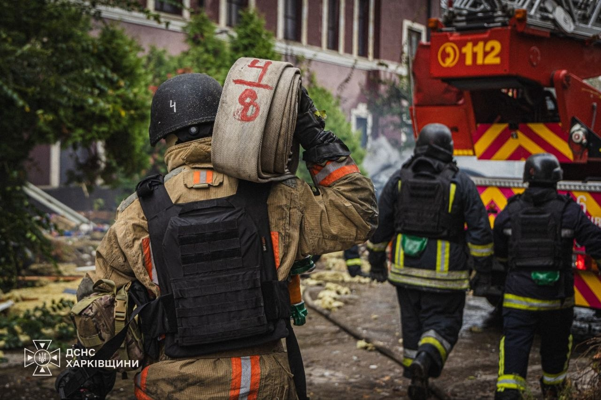
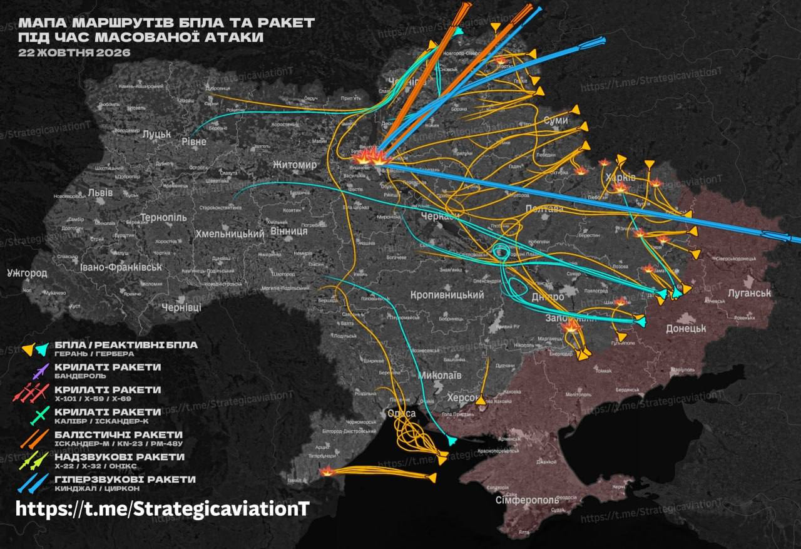
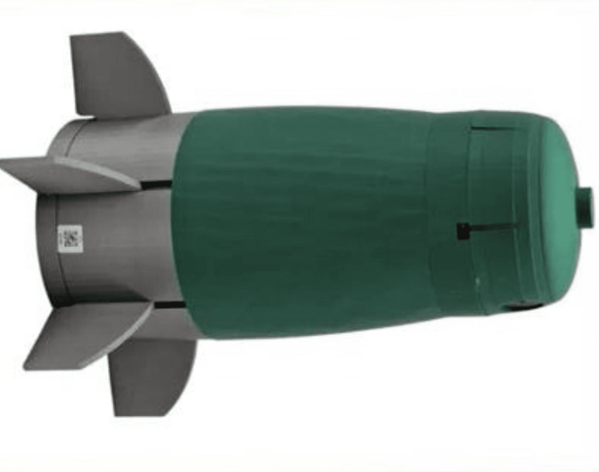
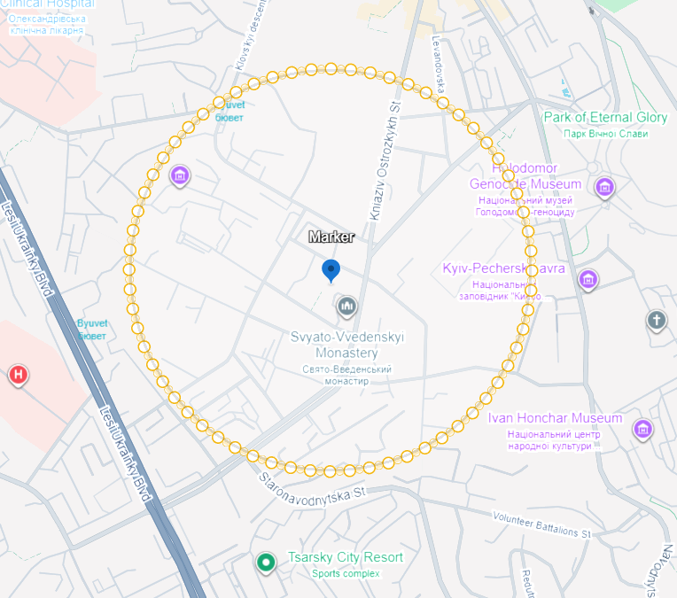
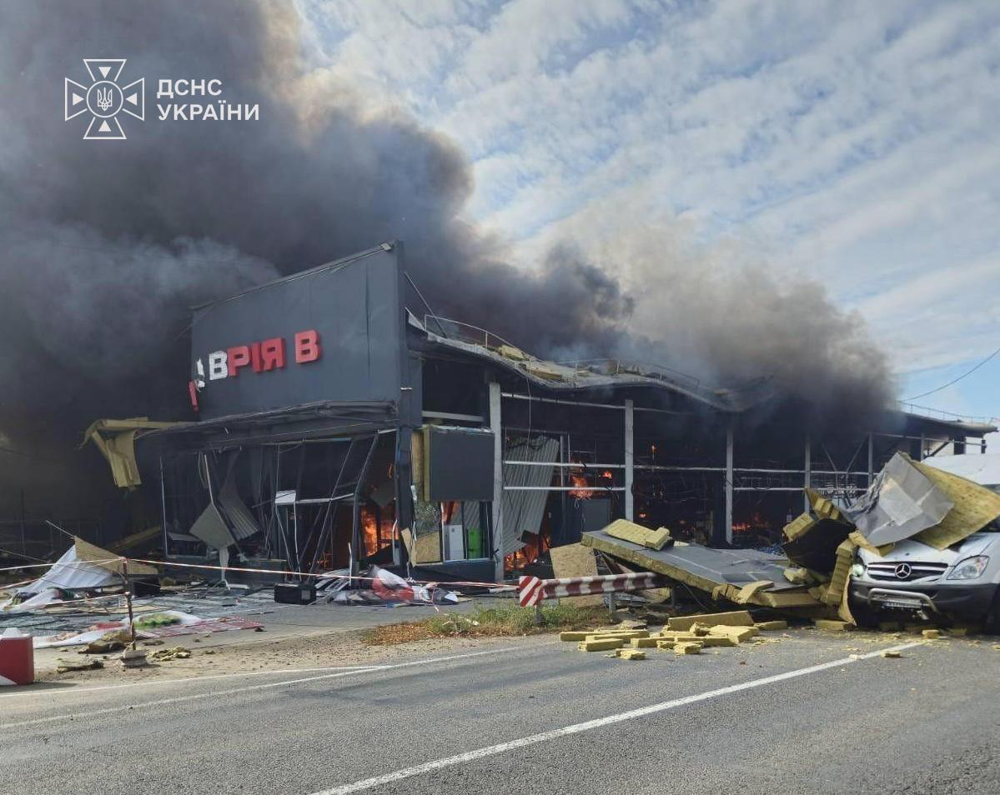
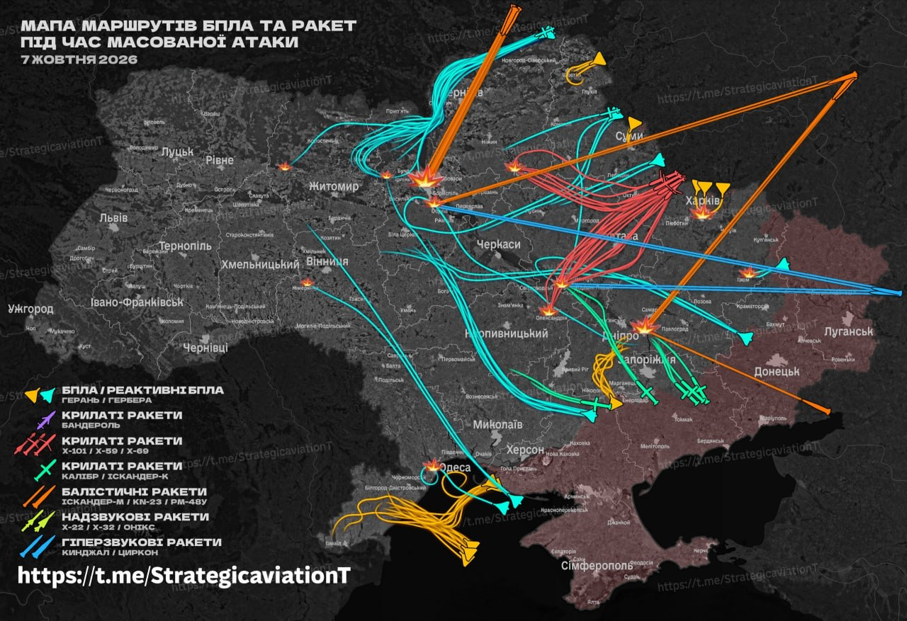

Nationwide documented minimum through Oct. 28. Includes the previously recorded Kyiv death, the death of a 12-year-old boy injured in the October 19 Nova Vodolaha park strike, three deaths reported by Donetsk regional administration on October 27, and one additional death reported in Novodonetske on October 28. Other reports remain under reconciliation.
Provisional count through the 01:22 all-clear on Oct. 28. Three new intervals added from the supplied alerts.in.ua tracker. The 03:25–04:21 and 12:57–13:20 intervals were already counted.
Under alert
6d 22h 19m
Provisional cumulative duration through the 01:22 all-clear on Oct. 28. Three new intervals add 1 hour 26 minutes: 40, 10 and 36 minutes. The 03:25–04:21 and 12:57–13:20 intervals were already included in the previous total. Tracker-reported durations are retained where they differ from displayed clock endpoints. Unresolved older intervals remain excluded.
Sites in working list56Entries since Oct. 1, including nine added from the Oct. 26–27 Kyiv attacks. Not a physical-site total.
Bridge strikes9+At least seven reported South Bridge hits; two North Bridge hits.
Kyiv CHP plants reportedly attacked3The reported attack did not specify the extent of damage at each plant.
Families without electricity550,000+Nationwide figure in President Z’s Oct. 19 statement after the overnight attack.
Regions with energy facilities attacked11Nationwide measure in the Energy Ministry’s Oct. 19 briefing. Ministry source.
Ballistic warning timing
A general Kyiv air alert does not establish that a ballistic threat was identified with useful lead time. On October 18–19, the Air Force said partners gave no warning before the first ballistic strike; information for the second arrived with roughly one minute to react. Air Force account, Oct. 19. Follow official Air Force alerts; the tracker records alert intervals, not a guarantee of advance ballistic warning.
— Added Donetsk regional administration’s October 28 report, raising the nationwide documented civilian-death minimum from approximately 146 to 147 for the death reported in Novodonetske. The Iverske death was not counted again because it appeared in the October 27 update. Added the report on Zelenskyy’s assessment of Kyiv’s winter readiness and the proposed special cabinet, alongside Klitschko’s October 27 updates on crossings, bridge safety and shelters. The previous increase from approximately 143 to 146 followed three deaths reported in Donetsk region on October 27. The previously recorded Kyiv death remains included in the baseline. Kyiv alerts stand at 188, with 166 hours 19 minutes cumulatively under alert through the 01:22 all-clear on October 28. Raised the bridge-strike working count from six to at least nine after a report that at least three ballistic missiles hit the South Bridge on October 27. Added the October 26 evening alert intervals and nine new entries to the working site list.
— Raised the nationwide documented civilian-death minimum from approximately 143 to 146 after Donetsk regional administration reported three deaths in its morning update. The October 26 Kyiv death was already included in the previous total. Vadym Filashkin, October 27.
— Raised the bridge-strike working count from six to at least nine after eRadar reported that at least three ballistic missiles hit the South Bridge. This counts the reported missile hits, not structural damage or separate impact points. eRadar report.
— Reconciled the supplied alerts.in.ua tracker’s five listed intervals. The 03:25–04:21 and 12:57–13:20 alerts were already included in the October 27 baseline. Added the three later intervals: 19:30–20:11 (40 minutes as reported), 22:41–22:51 (10 minutes), and Oct. 28, 00:46–01:22 (36 minutes). Provisional total: 188 alerts and 166 hours 19 minutes under alert since Oct. 1. Unresolved older intervals remain excluded.
— Reconciled two further completed Kyiv alerts against the supplied alerts.in.ua tracker: 03:25–04:21 (56 minutes) and 12:57–13:20 (23 minutes). Provisional total: 185 alerts and 164 hours 53 minutes under alert since Oct. 1. Both intervals are counted once. Unresolved older intervals remain excluded.
— Closed the 03:25 Kyiv alert at 04:21 using the supplied alerts.in.ua tracker. Count remains 183. Replaced the provisional 49-minute snapshot with the reported 56-minute interval and updated cumulative time under alert to 163 hours 34 minutes.
— Updated the dashboard from the October 26 13:49 cutoff to include four later Kyiv alert intervals and the active alert that began at 03:25. The provisional total is 183 alerts and 163 hours 27 minutes under alert through about 04:14. Raised the nationwide documented civilian-death minimum from approximately 141 to 142 after adding one death reported in the October 26 evening Kyiv attack. On Oct. 27, raised it again to approximately 143 after a 12-year-old boy died from injuries sustained in the Oct. 19 Russian drone strike on a park in Nova Vodolaha, Kharkiv region. The attack’s confirmed toll rose to six. Added nine entries to the working site list.
— Added the live Kyiv ballistic-missile attack report, the 03:59 impacts reported by Klitschko, and a detailed timeline of the October 26 evening attack, including one death, 10 injured and damage to medical, educational and transport facilities. Added Lubinets’s announcement of a humanitarian ceasefire around occupied Oleshky.
Oct. 26 — Added the UN Commission of Inquiry’s findings that Russia’s systematic attacks on Ukraine’s energy infrastructure constitute war crimes and crimes against humanity, alongside findings on trafficking foreign nationals into Russia’s armed forces. Included the Commission’s account of its evidence and its stated limitation on investigating attacks in Russia and occupied areas.
Oct. 26 — Added Terekhov’s report on the destruction of Kharkiv’s last operating Epicenter hypermarket, including the previous week’s attack and casualty figures.
Oct. 26 — Added the 13:46–13:49 Kyiv drone alert from alerts.in.ua, reported duration 2 minutes 45 seconds. Provisional Kyiv alert count: 178. Cumulative duration: approximately 160 hours 06 minutes through the 13:49 all-clear.
Oct. 26 — Added Fedorov’s report that Russian attacks wounded eight people in Zaporizhia city and that 857 strikes hit 52 settlements across the region over the preceding day. Linked the regional official’s Telegram post and Suspilne’s report.
Oct. 26 — Added Filashkin’s morning report of one person killed in Kramatorsk and nine wounded across Donetsk region, plus 41 attacks on settlements and the evacuation of 263 people, including 30 children.
Oct. 26 — Added the 09:44–09:48 Kyiv drone alert from alerts.in.ua, reported duration 4 minutes 46 seconds. Provisional Kyiv alert count: 177. Cumulative duration: approximately 160 hours 03 minutes, adding the tracker-reported duration to the previous working total.
Oct. 26 — Raised the provisional nationwide documented civilian-death minimum from ≈137 to ≈138 after adding one death reported in Kramatorsk by Donetsk Regional Military Administration head Vadym Filashkin. The previous update reconciled five further deaths reported in Nikopol district, Lozova, Sumy region and Yarova. Added four Kyiv alert intervals from the Kyiv Digital history: Oct. 25, 15:26–16:06 (40 minutes), 19:02–19:34 (32 minutes), 21:38–21:53 (15 minutes), and Oct. 26, 03:32–03:47 (15 minutes). Provisional Kyiv alert count: 176. Cumulative duration: 159 hours 58 minutes using the existing working total and tracker-reported durations. Kyiv Digital alert history.
Oct. 25 — Closed the Kyiv alert that began at 09:50 at 11:40, adding 8 minutes to the previous provisional cumulative duration. The count remains 172, with five completed intervals on Oct. 25. Added the Russian strike on Poltava’s Epicentr shopping complex, where a fire broke out and a 52-year-old woman was preliminarily reported injured.
Oct. 25 — Added the Synelnykove strike and Hanzha’s 08:52 update confirming four deaths. Raised the provisional nationwide documented minimum from ≈123 to ≈132 after adding four deaths in Synelnykove, one in Kharkiv and four reported across other regions on Oct. 23. Other casualty reports remain under reconciliation.
Oct. 25 — Added Z’s weekly strike summary and current casualty reports.
Oct. 25 — Reconciled alerts.in.ua: added five further completed intervals on Oct. 24 (14:42–16:07, 18:33–18:40, 18:54–19:31, 20:26–22:24 and 23:15–23:40), four completed intervals on Oct. 25 (00:11–00:26, 03:06–03:27, 03:38–04:04 and 06:43–09:22), and the active alert beginning at 09:50. Provisional count: 172 including the active interval. Cumulative duration: 158 hours 08 minutes, using tracker-reported durations and including the active alert’s reported 1 hour 42 minutes. Unresolved older intervals remain excluded.
Oct. 24 — Added Suspilne’s report on the October 23 mass Russian drone attack on Sumy, including injuries and damage to civilian infrastructure, housing and the pedagogical university. Reconciled the Kyiv alert count and duration.
Oct. 24 — Reconciled the October 23 afternoon alert and two overnight October 24 intervals. Updated the provisional count to 162 and cumulative duration to at least 148 hours 18 minutes.
Oct. 23 — Added Kharchenko’s warning that Kyiv needs another EUR 1.5 billion for winter preparations, with some disruption almost inevitable. Dashboard measures checked and unchanged.
Oct. 23 — Reconciled four Kyiv alerts since midnight (00:15–00:26, 02:22–02:50, 04:01–04:12 and 06:08–06:22). Added the Fun Fact Friday image toggle and alert summary.
Oct. 22 — Updated Kyiv casualty reporting and added the Pechersk and Lymanivka entries.
Oct. 22 — Revised the Chabany account after corroboration by regional authorities and independent media.
Oct. 23 — Reconciled the October 22 Kyiv alert intervals against the published daily list; updated provisional count and cumulative duration while retaining the 11:22/11:24 start-time discrepancy.
Oct. 22 — Reconciled provisional Kyiv alert total and nationwide documented civilian-death count.
Oct. 22 — Expanded the Method page on attribution, uncertainty and corrections.
Earlier updates (2)
— Updated the overnight Kyiv ballistic-attack chronology with casualty, metro, building and energy reports; reconciled the alert intervals supplied by the compiler.
— Reconciled five Kyiv air alerts recorded for Oct. 17, added the live ballistic-alert field report and updated reporting on Starshield, Starlink and rail disruption.
Chronology
Public Service Announcement
The civilian-death dashboard went live on October 10. The preliminary audit now compares the incident-level chronology and the dashboard's documented subtotal against daily casualty roundups, including Ukraine24h's visual maps, to check both the written record and the arithmetic.
The comparison has identified reports of deaths that have not yet been matched to specific chronology entries. That does not automatically mean those deaths are missing from the numerical subtotal. Daily roundups may cover rolling 24-hour periods rather than calendar days, report deaths from earlier attacks after victims die in hospital, or repeat figures already included in previous updates.
We are checking each case against its underlying incident and source before changing the tally. The dashboard's published figure remains a provisional documented subtotal for selected incidents, not a complete national count. Unresolved reports will not be silently discarded, but neither will they be added without checking for overlap.
The method page now explains this approach and distinguishes a documented death from an unresolved report or a possible duplicate. The audit continues. Every civilian death matters, and the count deserves the same care as the reporting behind it.
Wacko Wednesday
Kyiv’s emergency power stations deliver 1,800 watts continuously, though some appliances have ambitions beyond their station. The pressure washer must be gently discouraged, while the internet may survive several hundred phone recharges. A Canadian adventurer lives hundreds of miles from civilization. In Kyiv, civilization is close at hand, but the electricity has gone wandering.
Meanwhile, Russia has blown up the South Bridge, and Petro Poroshenko tells parliament that Ukraine needs better defenses against ballistic missiles and jet-powered Shaheds. Nobody disagrees. The power limits were printed on the box. The bridge warnings were there, too. Everyone had been told in advance and, with characteristic courtesy, declined to believe it.
South Bridge closure diversions for heavy vehicles via Boryspilska and Pryvokzalna streets, and for cars via Dniprovska Embankment towards Darnytsky and Paton bridges. (Map c/o National Police)
Oct. 28
Reports from Donetsk region add to the nationwide civilian toll as Kyiv’s winter readiness remains in dispute.
Ukraine · official and operator reports · Ukrenergo, DTEK, October 27–28
Russian attacks continue to damage Ukraine's energy infrastructure, forcing rolling blackouts and straining repair crews.
On October 27, Ukrenergo reported fresh outages in seven regions and restrictions to prevent overloading equipment damaged in earlier attacks. On October 28, hourly outages continued in parts of the country, with restrictions on industrial consumers through 23:59.
In Kyiv region, the October 27 schedule listed 5.5–7.5 hours of outages across 12 subgroups. Kyiv's revised schedule for October 28 showed planned outages of five to eight hours across its 60 groups. The schedules document the scale of the disruption, although actual outage times may vary by address.
In Kyiv, DTEK reported that a company office was damaged during the October 27 attack on the capital.
DTEK also reported two employees killed in Russian drone strikes on October 25 and 26: driver Vitaliy Shcherbyna and 41-year-old miner Valentyn Kotelevskyi, who had relocated to Pavlohrad from Lysychansk.
The outages reflect both fresh damage and the continuing strain on an energy system forced to operate with equipment already damaged by earlier attacks.
Donetsk region · regional administration · Vadym Filashkin, October 28, 10:04
Regional administration head Vadym Filashkin reported two people wounded in Sloviansk, damage to apartment blocks, businesses, a church, a private house and industrial premises, and further damage in Novostepanivka, Novobakhmetieve and Rozdollia. One person was killed in Novodonetske. In Iverske, one person was killed and one wounded.
Filashkin said settlements in Donetsk region were shelled 24 times over the previous day. A total of 750 people, including 82 children, were evacuated from the frontline.
The October 27 morning update had already recorded a death in Iverske. To avoid a possible duplicate, the nationwide working minimum adds only the death reported in Novodonetske unless a separate Iverske fatality can be established. Vadym Filashkin, October 28.
Kyiv · official statement, reported · Ukrainian media, October 28
Ukrainian Telegram news channels circulated reports on the morning of October 28 that President Volodymyr Zelenskyy had said Kyiv was insufficiently prepared for winter and Russian attacks. The reports followed a conversation with journalists on October 27, with publication held until the following morning. Zelenskyy was reported as proposing a special cabinet involving business representatives and public administrators to strengthen the capital’s resilience. He was also reported as saying that his assessment was not connected with his personal attitude toward Mayor Vitali Klitschko.
The proposal for a special cabinet is not entirely new. A report published on October 27 described Zelenskyy as having discussed the idea with journalists on October 23, saying it should strengthen the mayor, Kyiv residents and the city. The latest reports repeat the proposal while foregrounding the criticism of the capital’s preparedness.
Klitschko’s own updates the previous afternoon described measures discussed at a meeting of the Kyiv Defence Council. The city is to find UAH 1 billion for a government-backed project to build combined water crossings over the Dnipro and access roads, with locations determined by military command. The council also discussed additional technical measures to protect existing bridge structures amid intensified attacks on critical infrastructure. In a third update, Klitschko said the council discussed maintaining and equipping shelters, including mobile shelters, and reiterated his instruction to district heads to prioritise shelter spending and consider reallocating funds within their budgets.
These updates document actions announced by the mayor. They do not, by themselves, establish how far the city’s overall winter-resilience plan has been completed. For the wider strategic and infrastructure context, see The Kyiv Cauldron.
A Russian attack killed one person and injured 14 in Kyiv the previous evening. Donetsk regional administration reported three people killed and 22 wounded across the region, with residential and commercial damage in several communities. A humanitarian ceasefire took effect around occupied Oleshky.
Kyiv / Dnipro River · official · Vitali Klitschko, October 27
Kyiv plans to allocate UAH 1 billion to a government-backed project to build combined water crossings over the Dnipro River and access roads, Mayor Vitali Klitschko said after a meeting of the Kyiv Defence Council. The government approved an experimental project covering several regions in Cabinet resolution No. 1295 on October 15. Military command will determine where the crossings are located, with the Kyiv City Military Administration among the bodies responsible for coordination. The city is to find the funding on the government's recommendation.
The Defence Council also discussed the security of Kyiv's existing bridges amid intensified attacks on critical infrastructure. City specialists are developing additional technical measures to protect bridge structures, and military proposals were heard, Klitschko said.
Donetsk region · official · Vadym Filashkin, October 27, 09:36
Russian attacks killed three people and wounded 22 across Donetsk region, regional administration head Vadym Filashkin reported in his morning update. One person was killed in Sukhanivka, one in Kramatorsk and one in Iverske. In Yasnohirka, 16 people were wounded. Sloviansk reported three wounded, Kramatorsk one and Pryvillia one.
In Bilozerske, three two-storey apartment buildings were destroyed and two damaged. Damage was also reported to homes, shops, vehicles and other civilian property in Sloviansk, Kramatorsk, Yasnohirka and nearby communities. Russian forces shelled settlements in the region 37 times over the previous day. Authorities said 247 people, including 60 children, were evacuated from the frontline.
Kyiv came under a ballistic-missile attack after the citywide air-raid alert began at 03:25. At 03:59, Mayor Vitali Klitschko reported a hit on an administrative building in Podilsky district and hits at two other addresses involving non-residential buildings. No casualty figure was included in that update. The new impacts are being tracked separately from the previous evening’s attack until further reporting clarifies the sequence.
At 05:04, Mayor Vitali Klitschko confirmed a hit on the South Bridge and damage to metro infrastructure. At 06:54, the eRadar channel reported that at least three ballistic missiles had hit the bridge, damaging the road surface and bridge structures. That missile count is attributed to eRadar and has not been independently confirmed here. Klitschko, October 27, 07:58; eRadar, October 27.
A separate military-analysis Telegram channel, vanek_nikolaev, claimed that four Iskander-M missiles targeted the South Bridge overnight. This is a channel's assessment, not an independently confirmed missile count, and differs from eRadar's report of at least three hits. vanek_nikolaev, October 27.
Prime Minister Serhiy Koretsky said the overnight attack hit both the South Bridge and metro infrastructure and instructed the Ministry of Restoration, Infrastructure and Transport to accelerate repair work. He said the government would support the restoration and urged Kyiv authorities to add replacement ground transport where needed, including services connecting with operating metro stations and the city electric railway. The prime minister cited the need to restore movement between the two banks as traffic increased on other bridges. Koretsky, October 27.
At 07:58, Klitschko said the South Bridge was closed while specialists assessed the damage. Metro trains on the green line remained suspended between Osokorky and Chervony Khutir because of the hit to metro infrastructure on the bridge. The red line was operating end to end between Akademmistechko and Lisova after overnight repairs to damage between Darnytsia and Chernihivska and to exits at Lisova. The city added buses on routes between the left and right banks. These are separate road and metro restrictions, and their status may change as inspections continue. Klitschko, October 27, 07:58.
Later on October 27, KGVA spokeswoman Kateryna Pop said it was too early to give a timetable for reopening South Bridge traffic or restoring metro service to the left bank. Specialists were assessing the road surface for vehicle safety and evaluating damage to metro infrastructure. The authorities will decide whether to reopen the bridge fully or partially and whether metro trains can resume running toward the left bank after the assessments are complete. Censor.NET, October 27, citing Pop on the national telethon.
Russian missiles caused severe damage to the South Bridge in Kyiv and suspended traffic on the Metro's Green Line linking Vydubichi station to Slavutych station on the left bank of the Dnipro River. October 27, 2026. Photo: Vitali Klitschko / Telegram.
The city had already endured a long stretch of Russian drone activity on October 26, with a citywide alert from 21:41 to 23:11.
Separately, the previous evening’s attack killed one person and injured 14 people in Kyiv, according to Klitschko’s 07:15 update on October 27. Nine of the injured were hospitalized. During the night, officials reported damage near a metro station in Desniansky district, windows blown out at two medical facilities in Dniprovsky district, damage to a non-residential building, and damage to a university dormitory where most of the injured were students. Two emergency medical workers were among those injured, and an ambulance was damaged. Klitschko’s October 27 update.
At 03:04, Ukrainian Ombudsman Dmytro Lubinets announced that a ceasefire had taken effect at 03:00 Kyiv time in designated areas around occupied Oleshky, in Kherson region, to allow a humanitarian mission to evacuate residents. Lubinets said the arrangement followed agreements with Russian ombudswoman Yana Lantratova and was being coordinated through Melania Trump.
The supplied alerts.in.ua tracker records a Kyiv citywide drone alert from 12:57 to 13:20 on October 27, lasting 23 minutes. This matches the compiler’s contemporaneous alert report at 12:57 and is counted as one completed interval.
Sources: compiler field report, October 27; alerts.in.ua Kyiv alert tracker.
The citywide Kyiv alert began at 03:25 and ended at 04:21 on October 27. The tracker reports a duration of 56 minutes, which is used in the cumulative total.
Sources: compiler field report, October 27; alerts.in.ua Kyiv alert tracker.
In “The People on the Land”, we examine the proposed evacuation from Russian-occupied Oleshky and the uncertainty surrounding the ceasefire, routes and safety guarantees. Roughly 2,000 people, including children, are believed to remain in the town. Across the occupied eastern bank, our working estimate is about 160,000 civilians, while Vladimir Saldo’s public estimates have ranged from 145,000 to 160,000.
The question is not simply how many people can be moved. It is whether they can reach safety by a route they can choose, and what happens to those who cannot leave.
Russian attacks killed one person and wounded nine in Donetsk region, according to the regional administration. In Zaporizhia city, eight people were wounded. Officials in Zaporizhia reported 857 strikes against 52 settlements across the region over the preceding day.
Kyiv · official · Mayor Vitali Klitschko, October 26, 22:03–23:24
Russian strikes across Kyiv on Monday evening killed one person and injured 10, Mayor Vitali Klitschko reported. By 23:24, nine of the injured had been hospitalized. Most of the injured were students from a university dormitory in Desniansky district, where the blast wave shattered windows. A 20-year-old woman was among those hospitalized.
At about 22:03, Klitschko reported a hit near a metro station in Desniansky district and a burning car. He also said an ambulance crew responding to a call had come under fire. A paramedic and an emergency medical technician were injured, initially described as having non-critical wounds, and the ambulance was damaged.
In Dniprovsky district, blast waves shattered windows in the intensive-care unit of one medical facility and in two departments of another. The mayor reported no injuries at either facility. A non-residential building was hit nearby, and one person was reported dead near a supermarket. In Desniansky district, another impact was reported near a residential building where people might have been trapped. The mayor’s updates did not establish that anyone was trapped there.
Reuters also reported damage to residential buildings, educational facilities, metro infrastructure and two medical facilities. Its report said rescue operations were continuing.
The Kyiv alert history records an interval from 17:50 to 18:45 on October 26 and reports its duration as 56 minutes, one minute longer than the difference between the displayed endpoints. The cumulative total follows the reported duration.
Ukraine · official · UN Commission of Inquiry, October 26
The UN Independent International Commission of Inquiry on Ukraine concluded that Russian authorities committed war crimes by intentionally directing attacks against civilian objects and crimes against humanity through systematic attacks on Ukraine’s energy infrastructure. The Commission said the attacks, which have continued since autumn 2022, were intended to deprive civilians of electricity and other essential energy-dependent services and cause suffering.
During the winter of 2025–2026, when temperatures fell to minus 21°C, millions faced prolonged outages of heating, electricity, water and gas. The Commission based its assessment in part on interviews with 255 people who endured the conditions in Kyiv and seven other regions. A 53-year-old Kyiv resident described fearing that sleep would mean freezing to death. A 74-year-old woman said she lay cold and hungry without medicine.
The report also found compelling evidence that Russian authorities trafficked people from 29 countries, using deception or coercion and coordinating with recruiters abroad. Men recruited with promises of civilian employment were taken to Russia, pressured into signing military contracts in Russian and sent to dangerous assignments on the front in Ukraine. Many were killed or went missing.
The Commission also examined Ukrainian attacks on energy infrastructure in Russia and occupied parts of Ukraine, but said it could not investigate their impact further because Russia denied access and did not respond to its requests for information. It called for attacks on civilians and civilian objects to stop and for trafficked persons to be discharged from Russia’s armed forces.
Kharkiv · official · Mayor Ihor Terekhov, October 26
Terekhov said Russian forces destroyed the city's last operating Epicenter hypermarket on October 24, after attacking it three times in two months. Jet-powered drones caused a fire that engulfed the store's trading halls and warehouses.
The store provided hundreds of jobs and supplied materials for residents repairing homes damaged by Russian attacks, including through the state eVidnovlennia recovery program.
Kharkiv endured 36 attacks last week, 28 involving jet-powered Shahed drones. Three people were killed and 28 injured, including three children. Six city districts came under attack, damaging homes, businesses, railway and energy infrastructure, the television tower and the Kharkiv circus.
Three emergency workers were injured by attacks while fighting fires on October 24, and a fire engine was destroyed. On October 26, Terekhov reported another strike on the Kholodnohirsky district, with the consequences still being assessed.
Donetsk region · official · Vadym Filashkin, October 26, 09:59
Russian attacks killed one person and wounded three in Kramatorsk, according to Donetsk Regional Military Administration head Vadym Filashkin in his morning operational update. Four people were wounded in Sloviansk, and one each in Donetske and Serhiivka. Russian attacks damaged residential buildings in several communities, including 26 private houses and three apartment blocks in Sloviansk, and six apartment blocks and 19 private houses in Kramatorsk. A religious building, buses and cars were also damaged in Kramatorsk.
Filashkin said Russian forces shelled settlements across Donetsk region 41 times over the preceding day. Authorities evacuated 263 people from the frontline, including 30 children.
The supplied alerts.in.ua Kyiv history lists a drone-related air alert on October 26 from 09:44 to 09:48, with a reported duration of 4 minutes 46 seconds.
Zaporizhia · official · Ivan Fedorov, October 26, 07:00
Russian attacks wounded eight people in Zaporizhia city, regional military administration head Ivan Fedorov reported at 07:00 on October 26. Over the preceding day, Russian forces carried out 857 strikes against 52 settlements in Zaporizhia region, according to Fedorov. The tally included two missile strikes on Zaporizhia, 17 air strikes, 674 drone attacks, two multiple-launch rocket system attacks and 162 artillery strikes. Authorities received 60 reports of damage to homes, vehicles and infrastructure.
A humanitarian evacuation from occupied Oleshky raises questions that reach beyond the immediate rescue. Who arranged Newsmax’s exclusive access, what can its crew show, and will other correspondents be allowed to report independently? Shelby Wilder’s work deserves to be judged on its merits, while the ownership of the Ukrainian Newsmax franchise warrants careful scrutiny without turning business connections into accusations.
The people of Oleshky need food, medicine and a safe route out. The operation should be judged by what happens to them, and any successful humanitarian pause should prompt questions about where similar evacuations might be negotiated next.
Russian attacks killed four people in Synelnykove on October 24, after a 62-year-old man died in hospital the following morning. Strikes also damaged infrastructure in Dnipro and homes, shops and vehicles across the region.
Poltava · attributed · Regional administration, October 25
A Russian drone struck the Epicentr shopping complex in Poltava on the morning of October 25, starting a fire. At 12:02, Suspilne reported that regional administration head Vitalii Diakivnych had said a 52-year-old woman was preliminarily injured. The scale of the damage was still being assessed and emergency crews were working at the site.
Dnipropetrovsk region · attributed · Regional administration, October 25
A Russian drone struck Synelnykove on October 24, killing three people and injuring others in a residential area. A fire broke out in an apartment building, while a shop and cars were damaged. At 08:52 on October 25, regional head Oleksandr Hanzha reported that a 62-year-old man had died in hospital, bringing the death toll to four. Thirteen people were injured in the strike, including an 11-year-old girl. Four injured people remained hospitalized in serious condition.
Across the region, Russian forces attacked three districts more than 20 times with drones and an aerial bomb. Infrastructure was damaged in Dnipro. In the Nikopol district, a 50-year-old man was hospitalized in moderate condition after another attack, and a private house was damaged.
Z said Russia had launched about 1,600 guided aerial bombs, 48 missiles of various types, including ballistic missiles, and nearly 2,300 attack drones against Ukraine over the past week. He said strikes had caused deaths and injuries almost daily and damaged sites in nine regions, including thermal power plants, substations, coal mines, grain storage facilities, shopping centres and a postal terminal.
In his account, four people were killed and 22 wounded in strikes on Dnipropetrovsk region. In Vinnytsia, a drone hit a residential apartment block and injured six people. In Kharkiv, Russian forces struck a hypermarket and then hit emergency responders who arrived at the scene, wounding rescuers.
At 07:30 on October 25, the regional administration reported three dead and 15 injured across three districts, including three dead and 14 injured in the Synelnykove district. At 08:52, regional head Oleksandr Hanzha said a 62-year-old man had died in hospital after the October 24 strike on Synelnykove, bringing that city's toll to four killed and 13 injured. These time-stamped figures describe overlapping incidents and reporting windows, so they must not be added together as separate casualties. The nationwide dashboard’s documented minimum remains at its October 22 cutoff until the October 23–25 incidents can be checked and deduplicated.
Z said Russia’s attacks were its response to diplomacy and efforts to end its international isolation. He called for continued air-defence support during negotiations, including delivery of already agreed Patriot interceptors and continued support for Ukrainian combat aviation against jet-powered Shahed drones.
Russian forces struck Kharkiv repeatedly on Saturday, October 24, killing one person and injuring four in a late-night drone attack. Earlier strikes damaged a shopping centre, a warehouse and other sites across the city.
Kharkiv · attributed · Kharkiv mayor and regional administration
Russian forces struck Kharkiv repeatedly on Saturday, October 24, hitting the Industrialny, Osnovyansky and Novobavarsky districts with drones and suspected missiles, according to Mayor Ihor Terekhov and regional military administration head Oleh Synehubov.
A Russian drone hit a shopping centre in Osnovyansky district twice and sparked a fire. Visitors and staff had been evacuated. A warehouse building and fence were also damaged, and a 39-year-old man was injured in the district. Repeated strikes and fires were reported in Industrialny district.
Late that night, a jet-powered drone struck Novobavarsky district and set fire to a single-storey building. Terekhov and Synehubov reported one person killed and four injured. Synehubov also reported three men injured in an attack on Derhachi and a woman treated for an acute stress reaction in Lozova.

Kharkiv State Emergency Service crews put out fires after Russian attacks on the city. Photo courtesy of the Kharkiv State Emergency Service.
More than 570 vessels have been struck in the Black Sea this year, killing at least 40 sailors, compared with 24 confirmed deaths in the Strait of Hormuz, the Financial Times reported on October 25, citing Ambrey and the International Maritime Organization. About 387 ships were struck from July through September, more than five times the previous quarter’s total, with attacks averaging over four a day. Ambrey attributed around 90% of strikes on shipping in the preceding 45 days to Russia. Attacks on shipping and port infrastructure have cut traffic through Greater Odesa ports from about 400 ships in July to fewer than 10 in September. Ukraine’s maritime agricultural exports fell to 1.4 million tonnes in August, around 75% below prewar levels, while war-risk insurance premiums reached as much as 15% of a vessel’s hull value, almost twice the Gulf rate.
Explosions were reported in Sumy on Saturday morning, after a mass Russian drone attack the previous night damaged civilian infrastructure, homes and Sumy State Pedagogical University and injured two petrol-station workers. In Kyiv, the alert tracker records two overnight intervals: 01:47–02:02 and 03:40–04:32, lasting 15 and 51 minutes by the tracker’s count.
Explosions were reported in Sumy on Saturday morning, October 24, following a very heavy night of Russian drone attacks the previous day. The head of the Sumy Regional Military Administration, Oleh Hryhorov, said Russian drones had deliberately targeted civilian infrastructure in three parts of the city, with damage also reported in the residential sector of Kovpakivsky district.
Two petrol-station workers, a 39-year-old woman and a 54-year-old man, sustained minor injuries and were treated before returning home. The attack damaged petrol stations, a warehouse, nearby homes, an administrative building and a parked car, as well as Sumy State Pedagogical University and its dormitory. The Sumy City Military Administration reported 200 damaged windows, 46 balconies and roofs on eight private houses needing repair. The cause and consequences of the explosions reported this morning have not yet been established in the material available here.
The supplied Kyiv alert history lists a drone-related air alert from 03:40 to 04:32 on October 24 and reports its duration as 51 minutes. The displayed endpoints span 52 minutes by clock time; the cumulative total follows the source-reported duration.
A mass Russian drone attack on Sumy injured two petrol-station workers and damaged civilian infrastructure, residential buildings and the Sumy State Pedagogical University. The city administration reported 200 damaged windows, 46 balconies and eight private-house roofs needing repairs. Energy Research Center Director Oleksandr Kharchenko says Kyiv needs another EUR 1.5 billion for winter preparations after spending more than UAH 16 billion since January, and warns that some disruption is almost inevitable. A reported attack on energy infrastructure in Lviv region left 175 settlements without power. Dnipropetrovsk region reported nearly 20 drone attacks across four districts, infrastructure damage in Dnipro and two civilians injured. Kyiv’s alert tracker lists eight intervals that day, including 11:13–11:55 and 14:24–14:49. Kyiv will temporarily close South Bridge traffic toward the left bank from noon to 15:00 for repairs intended to speed restoration of green-line metro trains. Vinnytsia region reported damage to energy and industrial infrastructure after a mass attack, without identifying the facilities. A DTEK thermal power plant separately reported that it had stopped generating after an attack.
Fun Fact FridayA wrong turn in the mud
On October 15, Donald Trump told Newsmax that Russian tanks could have reached Kyiv, but a general he called “obviously not a very good general” turned them into muddy farmland.
Seven days later, Volodymyr Zelenskyy rejected that account in a nearly two-hour conversation with Steven Bartlett on The Diary of a CEO.
Neither man has visited Rusaniv or Peremoha.
So we did.
Click the map to reveal the photograph of the Trubizh River.
The bridge over the Trubizh River between Rusaniv and Peremoha was blown up in the first days of March 2022 to prevent Russian troops from advancing on Kyiv.
Russian forces launched a mass drone attack on Sumy overnight on October 23, striking civilian infrastructure in three parts of the city and damaging residential buildings in Kovpakivsky district, Suspilne reported. Two petrol-station workers, a 39-year-old woman and a 54-year-old man, sustained minor injuries and were treated before returning home.
The attack damaged petrol stations, a warehouse, nearby homes, an administrative building and a parked car. Suspilne also reported damage to Sumy State Pedagogical University and its dormitory. The Sumy City Military Administration said 200 windows and 46 balconies had been damaged, and roofs on eight private houses needed repair. A later Suspilne report described three jet-powered drones hitting petrol stations and damage to four university buildings.
Kyiv has spent more than UAH 16 billion since the start of 2026 on measures to protect critical systems, compared with UAH 2 billion last year, and plans to spend another UAH 4.5-5 billion by year-end. But the city needs a further EUR 1.5 billion to complete the necessary work, Oleksandr Kharchenko, director of the Energy Research Center, said at an Interfax-Ukraine discussion on Friday.
The work includes protecting high-voltage substations and providing backup power for core sewage and heating systems. Local funds have covered most of the spending, with the central budget accounting for about 10%, Kharchenko said. A Treasury payment freeze lasting more than a month delayed work, and some equipment originally due to be installed by November or December will enter service later.
Kharchenko said Kyiv's 1.3 GW of internal generating capacity was physically destroyed in January 2026. The city now relies on external supply. Demand can reach about 2 GW at minus 10 degrees Celsius and is around 1.2 GW in milder weather.
Without local generation, the metro and water utility pumping stations switch to backup power, limiting service. Basic water circulation may continue, but supplying adequate pressure to elevated districts such as Pechersk depends on the main power lines serving water facilities.
"Some inconvenience this winter is almost inevitable," Kharchenko said. He said most cities need two to three years to complete projects to protect energy systems because engineering and regulatory work alone can take seven to eight months. Ukraine may need UAH 250-300 billion annually for at least another two years to strengthen energy security, he added.
Source: Oleksandr Kharchenko, director of the Energy Research Center, speaking at an Interfax-Ukraine discussion, Oct. 23.
The supplied Kyiv alert history lists a drone-related air alert from 14:24 to 14:49 on October 23, with a reported duration of 24 minutes. The displayed endpoints span 25 minutes by clock time; the cumulative total follows the source-reported duration.
Dnipropetrovsk and Lviv regions · regional administration reports
Russian forces attacked four districts of Dnipropetrovsk region with drones nearly 20 times, damaging infrastructure in Dnipro and injuring two people, the regional administration said in a report published at 07:30 on October 23. In Pavlohrad, an administrative building and a private house were damaged. In Nikopol district, attacks affected Nikopol and the Marhanets, Chervonohryhorivka and Pokrov communities. A 44-year-old man was injured and is receiving outpatient treatment. A 26-year-old woman was injured in the Shakhtarske community of Synelnykove district and is also receiving outpatient treatment. The administration did not identify the infrastructure damaged in Dnipro.
Separately, a Russian drone attacked an energy-infrastructure facility in Lviv district during an air alert from 11:56 to 12:14, Maksym Kozytsky, head of Lviv Regional Military Administration, said. Electricity was cut to 175 settlements: 154 completely and 21 partially. Energy workers were working to restore supply. The facility and the extent of its physical damage were not specified.
The published Kyiv alert history lists an interval from 11:13 to 11:55 on October 23 and reports its duration as 41 minutes. The displayed endpoints span 42 minutes by clock time; the cumulative total follows the source-reported duration.
Sources: compiler field report, Oct. 23, 11:15; compiler-supplied alerts.in.ua Kyiv alert history.
Traffic on South Bridge from Kyiv's right bank to the left bank is scheduled to be suspended from 12:00 to 15:00 on Friday, October 23, for repair work intended to speed up the resumption of train services on the green line of the metro, the Kyiv City State Administration said.
During the closure, buses No. 22 and No. 91 will be rerouted via Darnytsky Bridge. The administration said it would announce separately when traffic returns to normal.
The published Kyiv alert history lists an interval from 10:12 to 10:34, with a reported duration of 21 minutes. This reconciles the compiler's 10:14 field report with the published interval; it is counted once. The displayed endpoints span 22 minutes by clock time, while the source reports 21 minutes.
Source: compiler field report, Oct. 23, 10:14; alerts.in.ua.
Vinnytsia region was under a mass Russian attack during the previous day, with damage to energy and industrial infrastructure, private homes and outbuildings, Natalia Zabolotna, head of the regional military administration, said.
No casualties were reported. Emergency, municipal and energy workers were restoring damaged facilities and electricity supplies.
The statement does not identify the damaged energy facilities and does not establish that Ladyzhynska thermal power plant was the DTEK station that stopped generating after an attack.
The Kyiv alert history lists an interval from 02:22 to 02:50 and reports its duration as 27 minutes. The displayed endpoints span 28 minutes by clock time; the duration total follows the source's reported figure.
The Kyiv alert history lists an interval from 04:01 to 04:12, with a reported duration of 11 minutes. This reconciles the provisional 04:04 field report with the published interval; it is counted once.
Source: compiler field report, Oct. 23; alerts.in.ua.
The Kyiv alert history lists an interval from 06:08 to 06:22 and reports its duration as 13 minutes. The displayed endpoints span 14 minutes by clock time; the duration total follows the source's reported figure.
A combined missile and drone attack damaged civilian buildings and transport infrastructure in Kyiv. Local media also reported multiple waves of Russian drones targeting a critical infrastructure site near Vinnytsia on the evening of Oct. 22, with temporary power outages; the site and any damage were not identified in that report. Officials reported casualties, damage in Pechersk and disruption to metro and road operations; weapon counts and some target claims remain attributed.
UKRAINE · OCTOBER 22, 2026

Russia attacked Ukraine on October 22 with up to 150 attack UAVs and up to 30 missiles, most of which targeted Kyiv. Map c/o Strategic Aviation.
Russian drones attacked an unnamed critical infrastructure site near Vinnytsia in several waves during the evening of October 22, according to Vinnytsia | Times. The report said explosions were heard at about 16:30 and 20:30, and electricity was temporarily interrupted in some districts before being restored.
The post said no casualties had been reported and that no official information about damage to the site was available at the time. It did not identify the facility or establish whether it was the DTEK thermal power plant that separately reported stopping generation after an attack.
The compiler reported a red Kyiv alert and ballistic-missile threat at about 20:58. The published daily Kyiv alert list records the interval as 20:56–21:15. The alert is counted once in the provisional total; the difference between the contemporaneous report time and the tracker interval start is retained as a source-timing distinction.
Kyiv police said traffic across Pivdenny (South) Bridge had been temporarily blocked in both directions because of the security situation. The closure was subsequently lifted and road traffic has resumed. The available reports do not specify the time of reopening.
The overnight attack damaged part of the metro infrastructure on the South Bridge, forcing metro operations onto a limited route. The reopening of road traffic does not establish that metro services across the bridge have also resumed; those operations remain a separate service-status question.
Kyiv / Dnipro bridges · expert opinion and eyewitness field report
Properly designed pre-detonation screens could help protect Kyiv's bridges across the Dnipro from drones and small missiles, although preventing major damage from a direct hit by a powerful ballistic or cruise missile would be extremely difficult, Andriy Ozeichuk, director of construction company Rauta and chairman of the board of the Ukrainian Steel Construction Center (UCSB), told Interfax-Ukraine on October 22.
Ozeichuk said steel cables with netting stretched between them were the most effective option for protecting roadways. Bridge supports and the sides of spans could be protected with standoff structures made of lattice steelwork, using materials already available. Such screens could be adapted to individual bridge designs, repaired after localized damage and reinforced if necessary, without imposing excessive loads on existing structures.
He cited possible ways to use existing bridge structures as mounting points: the central cable-stayed pylon of Pivnichny Bridge to help protect its roadway, and the sides of the roadway on Darnytsky Bridge to support screens around the piers.
On Saturday, October 17, ukraine@war visited all seven bridges spanning the Dnipro in Kyiv, travelling by car and on foot. The circuit offered a firsthand view of the bridges as they stand, including protective netting and the longer-standing condition of the structures.
Many of Kyiv's bridges are dilapidated, including the Paton Bridge, photographed through a car window on October 17, 2026. The bridge can also be crossed on foot. Photo c/o ukraine@war.
Source: Andriy Ozeichuk, director of Rauta and chairman of the board of the Ukrainian Steel Construction Center, in comments to Interfax-Ukraine, Oct. 22; firsthand field observations by ukraine@war, Oct. 17.
The compiler-supplied alerts.in.ua snapshot recorded this interval as beginning at 11:22; the published daily list gives 11:24–11:53. This is one interval, not an additional alert. The dashboard retains the supplied 11:22 start provisionally and records the two-minute discrepancy here.
The supplied alerts.in.ua list showed a Kyiv air alert beginning at 08:51. The published daily list records the all-clear at 09:41, giving a final interval of 50 minutes. This interval is already included in the provisional cumulative duration.
Kyiv / ballistic missile attack · eyewitness and channel reports
Kyiv Informuye reported a red air alert and ballistic threat for Kyiv and the region at 01:55. The channel posted reports of incoming targets and explosions from about 02:01, followed by a citywide all-clear at 02:28. A new red alert and ballistic warning followed at 02:55; the channel then reported further incoming missiles and explosions across the city through at least 03:33.
At 03:11, the channel reported that energy infrastructure on Kyiv’s right bank was under attack and, at 03:16, that smoke was rising over the city. At 03:19 it estimated that about 20–30 missiles had been launched at Kyiv, suggesting energy infrastructure was the main target. That figure and the reported target are attributed to the channel and have not been independently verified here.
An eyewitness in Kyiv reported hearing at least six explosions. At 03:52, Kyiv Informuye reported a jet-powered UAV heading toward Myronivka from Cherkasy region; its route does not by itself establish that it was headed for Kyiv.
At 06:09, Kyiv Mayor Vitali Klitschko initially reported 15 people injured, including two 15-year-olds, with eight being treated in city hospitals. A later Kyiv City Military Administration update reported one person killed and 24 injured, 16 of whom were hospitalized. The administration said consequences of the overnight attack were recorded across six districts. Klitschko reported severe damage to the private sector in Dniprovsky district, damage to an ambulance station and six vehicles in Pechersky district, and a restaurant fire in Sviatoshynsky district. Part of the metro infrastructure on the South Bridge was also damaged, and metro service was operating on a limited route.
The mapping account AMK_Mapping estimated that about 22 missiles were launched: approximately 11 Iskander-M ballistic missiles and eight modified S-400/RM-48U ballistic missiles from areas near Klintsy and Pochep in Bryansk region, and three Zircon missiles from near Millerovo in Rostov region. The account also said CHP-4 and CHP-5 were among the targets hit and claimed none of the missiles was intercepted because Ukraine had run out of Patriot PAC-3 interceptors. These are attributed estimates and claims, not independently established facts in this chronology; exact routes, the status of interceptor stocks and damage at the named plants require confirmation.
VIDEO EVIDENCE / KYIV · OCTOBER 22, 2026
Russia continued its attack on Ukraine’s capital with ballistic missiles on October 22. Video c/o unknown person on the eastern bank of the Dnipro.
Pechersk, Kyiv / Sviato-Vvedensky Monastery and surrounding civilian area · attributed statement and official damage report
President Z said Russia used three ballistic missiles with cluster warheads against Kyiv overnight, and that one struck the area between Kyiv-Pechersk Lavra and Sviato-Vvedensky Monastery. He said monastery buildings, homes, shops, cafes and other civilian infrastructure were damaged, and that there were no military facilities nearby.
Serhii Beskrestnov, a presidential adviser and radio technology expert, identified the weapon as an Iskander ballistic missile carrying a K5 cluster warhead. In comments cited by Ukrainska Pravda, Oct. 22, Beskrestnov said the warhead dispersed 58 bomblets over an area of approximately 400 by 400 metres. He described the strike as intended to injure as many people as possible. The weapon identification and the assessment of intent are attributed to Beskrestnov, not independently established by the photographs from the strike area.

Reference image of the K5 cluster warhead, as identified by Beskrestnov. This is a weapon-reference image, not a photograph of munition remnants recovered at the strike site.

Z said a ballistic missile with cluster warheads struck the area between Kyiv-Pechersk Lavra and Sviato-Vvedensky Monastery. Oct. 22, 2026.
Glavcom, citing the Pechersk District State Administration, reported damage to 18 residential buildings on five streets, the Sviato-Vvedensky Monastery, an ambulance station and six ambulances. The report also described damage to a grocery store, administrative buildings, facades, windows and parked vehicles. These damage figures are attributed to the district administration.
A further account published on October 23 by the Union of Orthodox Journalists said drone debris fell on the monastery grounds at about 03:05, damaging the roof and walls and breaking windows. Two people helping in the monastery kitchen sustained shrapnel wounds; members of the monastic brotherhood were unharmed. The monastery held Divine Liturgy that morning despite the damage, according to the report. This account does not independently establish whether the debris was associated with the ballistic strike described above or a separate impact.
Lymanivka, Lozova community / civilian death · official
A Russian attack killed a 42-year-old woman in Lymanivka, in Lozova community, Kharkiv region, according to regional administration chief Oleh Syniehubov. The regional administration said attacks over the preceding 24 hours had affected Kharkiv city and 11 other settlements in the region. In Lymanivka, four private houses were damaged. No images are included in this entry.
A ballistic attack damaged buildings and homes in Kyiv; six people were injured. A separate drone strike killed two people in Sviatoshynsky district, while other reports documented damage to energy and transport infrastructure.
Kyiv Mayor Vitali Klitschko reported explosions in the capital during a ballistic attack at 22:12 on Oct. 21. At 22:49, he reported impacts at an auto-service building and a private house in Dniprovsky district, debris striking another private house in the district, and debris falling near a filling station. People might have been trapped under the rubble at one location, he said, and emergency services were heading to the sites.
At 22:53, Klitschko reported one woman injured and hospitalized. At 00:05 on Oct. 22, he reported a strike on the grounds of a transport-infrastructure facility in Darnytsky district and said six people had been injured in the previous evening’s missile attack; four had been hospitalized.
Source: Kyiv Mayor Vitali Klitschko, Telegram updates at 22:12, 22:49 and 22:53 on Oct. 21, and 00:05 on Oct. 22.
Rivne / supermarket and public transport · attributed
Footage published by the Telegram channel Rivne Holovne appears to show a Geran-5 drone striking a Metro supermarket in Rivne. The channel had earlier reported a very low-flying drone over the city, an explosion and smoke, and published video it described as the moment of impact. The weapon identification is based on the appearance of the drone in the footage and the channel’s description.
Rivne Regional Military Administration head Oleksandr Koval said preliminary information indicated that no one had been injured. The channel also reported that trolleybus route No. 11 was temporarily rerouted to follow route No. 10 in both directions after the attack.
The previous day, an attack on a shopping center in Rivne region injured three people, two of whom were hospitalized.
Dnipro / critical infrastructure and electricity supply · official
Russian forces struck a critical-infrastructure facility in Dnipro, regional administration head Oleksandr Hanzha said. The facility and extent of damage were not identified. More than 30,000 residents in Pavlohrad and Synelnykove districts and the city of Samar were left without electricity. Repair work would begin when security conditions allowed.
A Russian drone struck one of the installations at a Naftogaz gas-production site in Kharkiv region, acting company head Serhii Fedorenko said. The security situation prevented an immediate assessment of the consequences.
Ukraine / energy infrastructure and civilian sites · official
Russia has attacked energy facilities in Kyiv, Volyn, Odesa and Mykolaiv regions since overnight, Prime Minister Serhiy Koretsky said. He said Russian forces had also struck railways, shopping malls and residential buildings, and targeted civilian enterprises in Volyn, Lviv, Odesa and Zhytomyr regions.
In a separate update on Wednesday morning, the Energy Ministry said Russian forces had attacked energy facilities in Kyiv city and Kyiv, Volyn and Odesa regions overnight and into the morning, leaving some consumers without electricity. The ministry said restoration work was continuing in Ternopil and Khmelnytsky regions after earlier attacks, with power restored to most consumers affected there. New outages had also been reported in Zaporizhia, Kharkiv and Kherson regions amid continuing shelling and fighting. Emergency repair crews were working where security conditions allowed, the ministry said, while daily attacks, prolonged air alerts and the threat of repeat strikes complicated repairs.
A drone attacked a merchant vessel in the Black Sea, Koretsky said. In Kyiv, a drone hit a 24-storey residential building, killing two people. In Korotych, Kharkiv region, a strike destroyed private houses and killed two people. A university building in Kremenchuk and a shopping mall in Uman also came under attack. Injuries were reported in Poltava, Lviv, Cherkasy and Chernihiv regions.
Kyiv / residential building, vehicles and transport infrastructure · official
At 00:19, Klitschko reported a drone strike on a transport-infrastructure facility in Solomiansky district and a fire. At 06:09, he reported a drone falling on parked cars in Desniansky district. At 06:25, he reported a separate drone fall on open ground in Solomiansky district, with no fire reported at that stage.
At 06:56, Klitschko reported a hit on a 24-storey residential building in Sviatoshynsky district at the level of the 20th floor, where a fire broke out. At 09:16, he said two people had been killed and two injured; both injured people were hospitalized. The reports do not establish that the open-ground fall and the transport-infrastructure strike were the same incident.
The Air Force said Russia had launched Iskander-K cruise missiles and 186 strike UAVs overnight from October 20, including Shahed-type drones and other UAVs. By 08:30, air defenses had shot down or suppressed 150 UAVs, while impacts were recorded at 27 locations and debris falls at 13 locations. The figures were preliminary and covered the nationwide attack, not Kyiv alone.
DTEK reported emergency power outages in Sviatoshynsky district and Bucha district of Kyiv region, later saying they had spread to parts of Kyiv's Obolonsky and Shevchenkivsky districts. Scheduled outage timetables remained in effect elsewhere in the capital and region; repair crews were working to restore supply.
The supplied alerts.in.ua snapshot listed a new Kyiv air alert beginning at 05:18 and active for 26 minutes at the time of the snapshot. The same list records an earlier alert from 02:38 to 04:55.
This entry records the supplied tracker state only. The general alert interval does not by itself establish whether a ballistic threat has been identified or whether any advance warning was received.
The supplied alerts.in.ua list records a Kyiv air alert from 02:38 to 04:55, lasting 2 hours 17 minutes. This replaces the earlier, conflicting snapshot entry that gave a 02:39 start and did not record an end time.
· Kyiv / transport infrastructure and drone debris · official
A Russian drone struck a transport-infrastructure facility in Solomiansky district overnight, starting a fire, Kyiv Mayor Vitali Klitschko reported. Emergency services were working at the impact site. The initial report did not identify the facility or state whether anyone was injured.
At 23:41 on October 20, the Kyiv City Military Administration reported drone debris falling on open ground in Sviatoshynsky district and said there were no casualties according to preliminary information. Ukrinform also reported a drone falling on non-residential territory in Solomiansky district. The available reports do not establish that the debris falls and the transport-facility impact were the same event.
The transport-infrastructure facility is added to the working site list. The open-ground debris report and the unidentified non-residential fall are not counted as additional sites without clearer evidence of a distinct facility.
A Russian attack on Vinnytsia region on October 20 caused a fire at an unnamed critical-infrastructure site, Natalia Zabolotna, head of the regional military administration, said. Emergency crews extinguished the fire and explosives technicians checked the surrounding area for unexploded ordnance.
No casualties were reported. A total of 68 rescuers and 14 vehicles were involved in the response, Zabolotna said.
The site was not identified. This report does not establish that the facility was Ladyzhynska thermal power plant or the DTEK plant that reported a shutdown after an attack on October 22.
Vinnytsia region reported a fire at an unnamed critical-infrastructure site after a drone attack, with no casualties. Drone attacks damaged civilian premises across Kyiv; one person was killed and 21 injured. Later, drones hit a Desniansky warehouse and a Sviatoshynsky garage cooperative. Three heating workers were killed in Kramatorsk; three people were killed in the Chabany drone attack, according to regional authorities and independent media; three DTEK energy facilities were attacked in Odesa region.
Air Force spokesperson Yuriy Ihnat said Ukraine received no information from international partners before the first of two Russian ballistic strikes on Kyiv overnight on October 18–19. Information arrived before the second strike, at about 03:00, but Ukraine's own channels warned of the threat only about a minute before the missiles appeared.
On October 20, President Z said early-warning information from partners was working again. The statement does not establish how much warning residents will receive before a future launch.
· Kyiv / warehouse and garage cooperative · official
Russian drones struck a warehouse building in Desniansky district and the grounds of a garage cooperative in Sviatoshynsky district on the evening of October 20, Kyiv Mayor Vitali Klitschko reported. The initial report did not give casualty figures or describe the extent of damage.
These are recorded as two distinct affected sites. The report does not establish that either site was the same as the Sviatoshynsky open-ground debris report or the later Solomiansky transport-infrastructure impact.
· Kyiv / civilian premises and casualties · official
Russian drone attacks on October 20 damaged a residential building, medical facilities, a food-service establishment, a market and vehicles in Holosiivsky, Desniansky, Solomiansky, Obolonsky and Shevchenkivsky districts, the National Police said. Its 18:45 update reported 11 people injured and one woman suffering an acute stress reaction.
By 23:25, Kyiv Mayor Vitali Klitschko reported that 21 people had been injured in attacks on the capital during October 20, with one person killed. Twelve of the injured had been hospitalized, three in serious condition. This city-wide casualty update should not be added to the individual incident entries below as if it described a separate attack.
· Kramatorsk / heating-network workers killed · official
Russian forces attacked Kramatorsk with guided aerial bombs on October 20, killing three men born in 1978, 1984 and 1979 who worked for a municipal heat-supply organization, the Kramatorsk City Council said.
The workers were inspecting heating networks and checking their readiness for the heating season, the council said. They were working to help the city get through winter and keep residents’ homes warm.
Energoreforma, quoting Kramatorskteploenergo Director Roman Polischuk, identified the dead as dispatcher Andriy Dorosh, born in 1978; heating-network equipment repair fitter Yuriy Biriukov, born in 1984; and dispatcher Vitaliy Kobtsev, born in 1979.
The Association of Critical Infrastructure Facilities and the Ukrvodokanalekologiya Association called on the government to grant combatant status to critical-infrastructure workers operating in frontline areas, according to Energoreforma.
Sources: Kramatorsk City Council, Telegram, Oct. 20 (primary source); Energoreforma, Oct. 20, quoting Kramatorskteploenergo Director Roman Polischuk for names and job titles.
· Holosiivsky district, Kyiv / civilian casualties · official
A UAV fell in Holosiivsky district near a filling station close to the boundary with Kyiv region, Kyiv Mayor Vitali Klitschko said at 10:18 on October 20. One person was killed and four people were injured, he said.
Two of the injured were taken to hospital. Medics were examining and treating the other two at the scene, according to Klitschko. His statement did not specify the cause of the UAV's fall or describe damage at the site.
· Odesa region / electricity distribution · operator or company
Three DTEK energy facilities in Odesa region were attacked overnight on October 20, the energy company said. DTEK said the attacks continued damage to the region's electricity distribution networks.
Some households had already been reconnected, while 32,700 families remained without electricity at the time of the company's statement. Repair crews were working around the clock to restore supply, DTEK said. The company did not specify the facilities' locations or the extent of damage at each one.
The three deaths and four injuries were reported by the Kyiv Regional Military Administration and regional police and corroborated by independent reporting. This casualty count is included in the dashboard's selected-incident subtotal.
Washington / Ukraine peace negotiations · official transcript
Trump called on Ukraine to agree to a settlement with Russia and argued that the balance of the war was worsening for Kyiv. His remarks included the following:
Location: White House, Oval Office. This entry records Trump's statements; the claims within the quotations are not independently verified here.
Oct. 19
Five Kyiv air-alert intervals; one death reported after the overnight ballistic attack, metro service disrupted and energy damage reported in 11 regions.
· Khmelnytsky / industrial damage and electricity supply · official
A Russian attack damaged an unidentified enterprise in Khmelnytsky on Monday, starting a fire, and also damaged one residential building, Serhiy Tiurin, head of the Khmelnytsky Regional Military Administration, said. He did not identify the enterprise or specify its location in the city.
Some electricity consumers in Khmelnytsky region were left without power after a power line was severed, Tiurin said. There were no casualties according to preliminary information, he added.
· Volyn region / energy and critical infrastructure · official
Around 15 Russian drones targeted Volyn region overnight and in the morning, with Kovel, Manevychi and Lutsk among the areas most heavily attacked, Roman Romaniuk, acting head of the Volyn Regional Military Administration, said in a Telegram update at 09:30 on October 19. Critical and civilian infrastructure was damaged by direct hits and falling drone debris. No casualties had been reported.
By noon, Romaniuk said attacks on critical infrastructure had affected the Kovel, Manevychi, Prylisne, Kivertsi and Lutsk communities. The number of electricity metering points without power had risen from around 66,000 at 09:30 to around 68,000 at noon. Emergency repair crews and other services continued working to deal with the damage.
In updates through 16:41, Romaniuk reported that air-raid alerts had been lifted in all districts of the region. The all-clear does not indicate that electricity had been restored.
· Rivne / pharmaceutical distribution · attributed
A Russian drone struck a 2,370-square-metre warehouse belonging to pharmaceutical distributor BaDM in Rivne during a drone attack on October 19. No casualties were reported, Ekonomichna Pravda reported, citing participants in the pharmaceutical market. The warehouse opened in 2012.
EP reported that this was not the first BaDM warehouse attacked by Russia. The company’s 43,000-square-metre distribution centre was completely destroyed in a Russian missile-and-drone attack on December 6, 2025. The Rivne strike establishes damage to another pharmaceutical logistics site; the report does not establish a nationwide medicine shortage.
The overnight ballistic attack damaged metro infrastructure, residential and non-residential buildings, a medical facility and commercial premises. The State Emergency Service later reported eight people injured in Kyiv. President Z and the Energy Ministry described wider damage to energy facilities in 11 regions.
Earlier updates (9)
At 23:24 on October 18, Klitschko reported a preliminary impact on a medical-centre building in Desniansky district and a hit on a non-residential building in Dniprovsky district. Emergency services were sent to both locations.
Kyiv Mayor Vitali Klitschko reported at 00:15 on October 19 that one person had been killed in the attack. At 01:11 he identified the victim as a 21-year-old woman and said three people had been injured, two of them hospitalized.
At 03:11 on October 19, he said Chernihivska metro station on Kyiv's left bank had been damaged. Debris had also severed both a running rail and the contact rail nearby.
At 03:30, Klitschko reported debris striking the first floor of a 25-storey residential building in Solomiansky district and an impact at a non-residential building at another address. At 03:35 he reported an impact on non-residential premises in Dniprovsky district. At 04:21, the Kyiv City State Administration said the above-ground metro station, tracks and cable network had been damaged. Train service was expected to begin in the morning on schedule between Akademmistechko and Darnytsia, while Chernihivska and Lisova stations would remain temporarily closed for entry and exit. At 04:45, Klitschko reported three injured people in Solomiansky district. ASTRA reported that the attack began at about 03:00 and that at least five ballistic missiles had been launched toward Kyiv and the region from Russia's Bryansk region. That missile count and launch origin are attributed to ASTRA, not independently verified here.
At 10:19 on October 19, Interfax-Ukraine, citing the Ukrainian Council of Shopping Centres, reported severe damage to Cosmo Multimall at 6 Vadyma Hetmana Street: the roof and building structures were damaged and part of the floors had collapsed. The adjacent Mercure Kyiv Congress hotel sustained minor glazing damage and remained operational, according to the report.
At 10:21 on October 19, the Kyiv Movement Telegram channel relayed Air Force spokesperson Yuriy Ihnat’s statement that two ballistic strikes had occurred overnight, one at about 23:00 and another at about 03:00. The channel also said no US warning had preceded the first strike. These details are recorded as attributed reporting; the supplied post does not include a direct link to Ihnat’s original statement.
At 10:47 on October 19, President Z said Russia had launched 16 ballistic missiles and more than 200 drones of various types, including jet-powered Shaheds, in a multi-wave overnight attack targeting Kyiv and Kyiv region. He said energy facilities and other infrastructure were targeted, with damage also reported to a medical clinic, school, metro station and residential buildings. Z said energy facilities in 11 regions had been attacked overnight and in the morning, with more than 10 energy infrastructure facilities damaged and at least 550,000 families left without electricity. These are figures in the president’s statement; the post does not provide a detailed regional breakdown or a revised Kyiv casualty total. He also said partners had again failed to warn of the ballistic attack and criticized the blocking of air-defence missile supplies alongside sanctions relief or delays for Russia.
At 11:00, the Telegram channel Реальна Україна | Радар Тривога reported that the Zveropolis contact zoo at the complex had also been affected, saying all animals had survived and were being urgently evacuated. The zoo details are attributed to that channel; independent confirmation was not included in the supplied report.
In an update reported by Ukrainska Pravda at 14:04 on October 19, acting head of the Kyiv City Military Administration Andriy Tkachov said specialists were still assessing the damage at Chernihivska station and that the time needed to reopen it could not yet be forecast. He described the damage to the tracks as very serious, but said equipment and spare parts were available and repairs would be carried out as quickly as possible. Chernihivska and Lisova remained closed for entry and exit; train service continued between Akademmistechko and Darnytsia on schedule.
The compiler reported a red-level alert for a ballistic-missile threat over Kyiv on October 18. This is a historical field report, not a current alert status. The exact start and all-clear times for that interval have not been established from the tracker history.
The provisional October alert count rises to 124. The running time-under-alert estimate remains approximately 113 hours 8 minutes and does not yet include this current interval, because its start time is not confirmed.
The compiler-supplied history lists two Kyiv air alerts on October 18: 09:01–09:27 (26 minutes) and 09:59–11:09 (1 hour 10 minutes). Together they total 1 hour 36 minutes. The first interval includes the 09:03 field report of an active alert. The second alert ended at 11:09.
With the five October 17 intervals now included, the provisional October count is 123. The running time-under-alert estimate is approximately 113 hours 8 minutes, based on the prior 107 hours 17 minutes through October 15, the 4 hours 15 minutes listed for October 17, and 1 hour 36 minutes on October 18. The October 16 intervals and separate 04:15 October 17 field report remain unresolved and are excluded from the duration total.
Nine people were killed and 12 wounded in the October 17 Russian air strike on Sloviansk; rescuers completed rubble clearance on October 21. Five Kyiv air alerts were recorded that day.
Sloviansk, Donetsk region / residential buildings and civilian casualties · official
Nine people were killed and 12 wounded in a Russian air strike on Sloviansk on October 17. Rescuers completed clearing rubble from two destroyed five-storey buildings after five days of work, Sloviansk City Military Administration head Vadym Liakh said on October 21.
Rescuers recovered seven bodies during the operation, including a State Emergency Service employee. Four people were recovered from one building and three from the other. Liakh said the bodies of three women aged 52, 77 and 55 were among those recovered. Emergency crews worked under the threat of further air strikes and drone attacks and cleared more than 200 tonnes of debris.
Source: Interfax-Ukraine, reporting Liakh’s October 21 statement and the State Emergency Service’s account of the rescue operation.
The alerts.in.ua history supplied for this update lists five Kyiv alerts on October 17: 04:33–05:25 (52 minutes), 06:58–08:09 (1 hour 11 minutes), 20:48–21:14 (26 minutes), 21:19–22:02 (43 minutes) and 22:23–23:26 (1 hour 3 minutes). Together, the five intervals total 4 hours 15 minutes. The three evening alerts were separated by gaps of five and 21 minutes.
The dashboard count is updated to include all five tracker-listed intervals, and the running time-under-alert estimate is extended from approximately 107 hours 17 minutes to 111 hours 32 minutes. The earlier field report of an alert at 20:51 appears consistent with the tracker interval beginning at 20:48. A separate field report at 04:15 has not been matched to this history and is not counted as an additional tracker-confirmed interval. The October 16 field-reported intervals also remain unresolved and are excluded from the duration total.
· United States / satellite access and Russian energy trade · official
Secretary of State Marco Rubio said Ukraine does not currently have access to Starshield, the military satellite service used by the U.S. military, and has requested access “in order to conduct deep strikes inside of Russia.” He said the request remained under discussion.
Rubio distinguished Starshield from Starlink, which he described as a commercial product. He denied that the White House had ordered Starlink speeds to be reduced in Ukraine, saying “nobody ordered that Starlink speed to be slowed down” and that, according to his understanding, service had been restored. Those remarks address the commercial Starlink slowdown; they do not establish why Ukrainian users reported disruptions, nor do they resolve separate reports about Starshield access.
In an October 18 interview with Ukrainska Pravda, Khartia brigade drone-company commander Yury Butusov said his unit had experienced the slowdown’s operational effects. He described the speed restriction as especially consequential for fast fixed-wing strike drones using Starlink and said speeds had returned to a maximum of about 160 km/h. Butusov interpreted the episode as political signalling, arguing that a purely technical problem would likely have been communicated to Ukraine in advance. That is his assessment, not proof of an order or its origin. He also noted that the Pentagon manages Starshield, but did not establish that Starshield itself had been switched off. Rubio’s denial and Butusov’s frontline account therefore address different parts of an episode whose cause remains unresolved.
Asked about the waiver of sanctions and tariffs under the new Russia sanctions law, Rubio said the president wanted to use a 60-day period to assess the effects on the U.S. and global economies. He cited pressure on global energy supplies, including the war between Russia and Ukraine, and argued that Russian diesel would reach the global market regardless, with the question being how much the United States would buy. The remarks set out the administration’s rationale; they do not establish that the waiver will reduce energy prices or that its economic benefits outweigh the revenue available to Russia.
· Kryvyi Rih and Zaporizhia / reported missile attack · media
Russian forces launched a reported missile attack on Kryvyi Rih, the president’s hometown, and Zaporizhia early on October 17. Suspilne correspondents reported hearing explosions in Kryvyi Rih at 04:45 and further explosions at 04:50. A Ukrainian monitoring channel subsequently reported a total of 24 missiles aimed at the two cities: 13 toward Kryvyi Rih and 11 toward Zaporizhia, including Kalibr cruise missiles and Iskander-M and KN-23 ballistic missiles.
Videos of explosions in Kryvyi Rih and images described as showing impacts in Zaporizhia are circulating. The reported missile inventory and the locations shown in circulating material have not been independently verified here. Targets, casualties and damage remain to be established. This entry will be updated as authorities and local reporters provide confirmed details.
· United States / Trump interview on Ukraine · media
In an interview broadcast on October 15, 2026, with Rob Finnerty on Newsmax’s Finnerty, President Donald Trump said:
“Z is not a good guy for us to deal with.”
“He doesn’t want to settle. He says he wants to settle, but he doesn’t. No, I’m not a big fan of Z.”
“Now, if you tell me that Z is again shooting at refineries, all he’s doing is making the world oil price higher.”
“Well, I think that’s a disgrace. There’s plenty of other targets. ... There are a lot of targets that you can hit.”
“But when you shoot at diesel refineries where you make, you know, diesel oil and we need that and the world needs that, then he’s not doing a good service for the world.”
“It should end soon. I think they actually both would like to see it end.”
“But I think I find Z to be more difficult to deal with than Putin.”
“As you know, Putin hates Z, and Z hates Putin. And when you have that kind of hatred, it’s very hard to get something settled.”
“I think you need an election because there’s nobody that’s telling me that the people of Ukraine are satisfied having missiles hitting their apartment building.”
· Ukraine / electricity, water and heating · operator or company
Russian attacks on energy facilities overnight and on Friday morning caused new power outages in Kyiv and Kyiv region, as well as other parts of the country. Ukrenergo says emergency restoration work is under way where security conditions permit. Hourly outages for consumers and capacity restrictions for industry remain in force in some regions, and the operator has warned that the situation may change as damaged equipment is brought back into service.
The damage is propagating beyond electricity supply. After the October 13–14 attacks, Kyiv’s Darnytsia combined heat and power plant halted hot-water supply to its customers. Earlier damage to the plant in February had left more than 1,100 buildings without heating for the rest of that heating season. On October 14, all three of Kyiv’s main combined heat and power plants were reported attacked, although the available reports do not establish the extent of damage at each plant.
A strike on an energy facility does not end at the facility fence. Electricity powers water pumps, helps maintain pressure and supplies heat and transport. Backup generators can keep selected services running, but they cannot substitute for a functioning urban power system.
The grid has not been shown to have collapsed. The risk is cumulative: repeated damage, emergency outages and repair work under fire are narrowing the margin for recovery before winter demand rises. The key questions are how much capacity remains, how quickly it can be restored and whether the next attack arrives first.
· Ukraine / passenger rail and electricity supply · operator or company
Ukrzaliznytsia’s official delay notices show major disruption to passenger services in several regions. On Friday, the railway’s suburban-train channel reported delays of almost six hours, attributing disruption to security threats and problems with electricity supply to railway infrastructure. The operator’s live tracker also showed long-distance trains hours behind schedule. UZ cautions that estimates can change during air alerts, evacuations and diversions.
At Kyiv station, the compiler was still waiting for the Chop Express, scheduled to arrive at 09:26. A reported delay of 5 hours 1 minute would put its arrival at about 14:27. That is a calculation from the delay observed, not a separately verified live ETA from UZ.
The railway’s reports establish that electricity supply is affecting some services, but they do not show that every delay has the same cause. Security stoppages, diversions and power problems should not be collapsed into one explanation. Even so, the delays illustrate how disruption to energy and transport can compound across essential services.
· Ukraine / attacks on civilian and energy infrastructure · official
Russian attacks were reported across several Ukrainian regions on Friday morning, with civilian casualties and damage to homes, energy infrastructure, transport and businesses.
In Kharkiv, Mayor Ihor Terekhov reported strikes in the Shevchenkivsky and Industrial districts. The latest update relayed by Operatyvnyi ZSU put the death toll in Shevchenkivsky at three, with five people injured. In Rivne, regional authorities reported seven people injured.
In Odesa region, four people were reported injured. Strikes damaged seven private homes, an energy facility and a household-goods factory, with fires subsequently extinguished. In Chortkiv, Ternopil region, the channel reported that jet-powered drones destroyed a foreign-owned enterprise. Kovel, in Volyn region, experienced electricity and water disruptions after attacks.
Further damage and fires were reported in Khmelnytsky region, including at an oil depot where firefighting was complicated by the security situation. In Dubliany, near Lviv, falling drone debris injured a 34-year-old man, according to Lviv Mayor Andriy Sadovyi. A transport enterprise in Kirovohrad region was also reported hit.
At 09:47, Operatyvnyi ZSU relayed an Air Force report that 114 of 149 Russian attack drones had been shot down or suppressed, including 77 of 108 jet-powered drones. The report recorded hits by 27 aerial weapons at 24 locations and debris falling at another 14 locations. Kyiv and other regions were under drone threat during the morning, with a Kyiv alert reported at 09:54.
Source: Operatyvnyi ZSU, relaying reports from regional authorities and local officials and figures attributed to Ukraine’s Air Force. Figures reflect updates available through 10:08 and may be revised.
A new Kyiv air alert was reported at 04:59. The public alert history available at the time of entry did not yet show a matching interval. This records the contemporaneous observation; the start and end times will be reconciled against the alert history when available.
· Lutsk and Volyn region / overnight drone threat · media
Volyn regional administration updates show the Lutsk district drone alert was renewed at 03:10. Alerts followed in Kovel district at 03:47 and Volodymyr district at 03:53. At 03:51, Suspilne, citing Ukraine’s Air Force, reported a jet-powered UAV east of Volyn heading toward Lutsk. Suspilne correspondents reported hearing explosions in Lutsk at 03:55. The Lutsk district all-clear followed at 04:04, with Volodymyr and Kovel districts cleared at about the same time. Kamin-Kashyrsky district had been cleared earlier, at 02:09.
The reports establish a drone threat and explosions heard in the city, but do not yet establish a new impact, damage or casualties. The previous evening, debris from one of three downed jet-powered Shaheds damaged power lines in Lutsk community, disrupting electricity and water supply. A city official expected stable water supply around midnight, but confirmation of full restoration has not yet been located. This entry will be updated as further information about any new damage becomes available.
· Kyiv / air alert and local drone reports · tracker
The compiler’s alerts.in.ua record shows a new Kyiv air alert beginning at 19:23, still active at 20:15. At 19:45, the Go Kyiv Telegram channel warned of a drone threat in central Kyiv and Pechersk. The channel reported an explosion at 19:46, listed Stoyanka, Korchuvate, Mysholivka, Teremky, Holosiiv and Zhulyany at 19:48, and said at 19:50 that the drone was manoeuvring.
These are contemporaneous local-channel reports, not an independently verified flight track. The messages do not establish the explosion’s location, cause or any resulting damage. The current alert is the sixth interval listed for Kyiv on October 15 and brings the provisional October total to 114.
Sources: alerts.in.ua; Go Kyiv Telegram channel, compiler-supplied messages timestamped 19:45–19:50.
· Kropyvnytsky, Kirovohrad region / Faino Market logistics center · operator or company
Faino Market said a Russian attack on the evening of October 14 destroyed the logistics center at the heart of its grocery-store network. The company said employees were killed and injured but did not specify numbers. The Kirovohrad Regional Military Administration separately reported three people killed and six injured in Kropyvnytsky during the region’s largest Russian attack since the full-scale invasion began. The available statements do not establish whether those figures include the logistics-center employees.
The company said it was rebuilding its logistics processes and establishing new supply chains, warning of possible delivery delays and shortages of some products. It was also working to restore its mobile application.
Kyiv Mayor Vitali Klitschko reported a fire in a warehouse building in Sviatoshynsky district after a UAV fell at 17:16. At 17:29, he reported a second hit on the same warehouse. Smoke was reported from the fire. The two hits are recorded as one affected facility in the working site list.
· Kyiv / smoke reported after an explosion · unverified
At 17:09, the local Telegram channel Kievreal reported that smoke was visible over the city after an explosion. The post does not establish the location or cause of the explosion, or whether a facility was hit. This is recorded as an attributed report pending corroboration and is not included in the strike or site counts.
Alerts.in.ua lists a Kyiv air alert beginning at 16:54 on October 15 and ending at 17:19. This was the fifth Kyiv alert interval listed for October 15 and brought the provisional month-to-date count to 113.
Source: alerts.in.ua; interval supplied by the compiler.
· Pechersk, Kyiv / three residential buildings near yama market · official
The Kyiv City Military Administration reported at 10:41 that debris from a Russian attack had damaged the facade and window glazing of a five-storey residential building, as well as the facades and parts of the roofs of two three-storey residential buildings. Two people were initially reported injured.
At 10:51, the administration revised the casualty figure to five injured. The State Emergency Service also reported five injured.
· Kirovohrad region / Kropyvnytsky, Znamianka, Oleksandriia, Pomichna and other communities · official
The Kirovohrad Regional Military Administration said the region had experienced its largest Russian attack since the start of the full-scale invasion. Nearly 360 Russian unmanned aerial vehicles were recorded over the region, with impacts reported at 26 locations.
The administration said Russian forces deliberately targeted critical infrastructure, transport enterprises, logistics facilities and residential buildings. The greatest destruction and damage was reported in Kropyvnytsky. Znamianka, Oleksandriia, Pomichna and other communities were also hit.
Three residents of Kropyvnytsky were killed and six people injured, the administration said. Medical assistance had been provided, while emergency services continued working at impact sites. Special commissions were to assess damage and losses to determine what assistance affected residents would need.
The report identifies categories of targets and 26 impact locations but does not enumerate the individual facilities. It is therefore recorded here as a regional attack report, not as 26 separately verified infrastructure sites.
A new air alert in Kyiv was reported by the compiler on the morning of October 15. The exact start time and final duration have not yet been independently reconstructed. The dashboard provisionally adds this alert to the October count, bringing it to 109. Its duration is not yet included in the displayed time-under-alert total.
· Ukraine / infrastructure attacks and the politics around them · editorial
The first two weeks of October tell two intersecting stories. Russian attacks damage Kyiv’s bridges, kill civilians in cities across Ukraine and hit the country’s electricity and gas infrastructure. Meanwhile, Trump announces that Putin has agreed to supply diesel, declares an energy ceasefire that neither side confirms as agreed, and becomes the focus of new questions about intelligence sharing and restrictions affecting Ukrainian military technology.
The chronology records the events, the claims made about them and the limits of what the available evidence establishes. It does not assume that events occurring in sequence were necessarily coordinated.
· Kyiv / high-voltage transmission crossing over the Dnipro · operator or company
Ukrenergo board chairman Vitaliy Zaichenko said a unique high-voltage power-transmission tower at the crossing over the Dnipro in Kyiv had been severed by a Russian drone and could not be restored. The company is developing alternative technical arrangements to maintain electricity transmission and said it would begin the procedures to implement them on October 15.
The distinction matters: Zaichenko did not say that electricity could no longer be transmitted across the river. His prognosis was that the tower itself was irreparable and that the operator would have to use a different engineering solution. He described drones capable of severing transmission towers as a new challenge.
At the same forum, Zaichenko said October 14 had seen one of Russia’s largest attacks on Ukrenergo facilities since the start of the full-scale war, chiefly targeting substations. He cited ballistic missiles and equipment losses, saying rapid restoration was the immediate challenge. He also described a shortage of backup equipment amid strong global demand and manufacturers’ existing contracts.
Ukrenergo’s wider operational update said the overnight and morning attack had left consumers without electricity in Kyiv and several regions, with emergency restoration work beginning where security conditions allowed. Kyiv’s Dnipro District Administration separately reported emergency outages in several districts of the capital. These sources corroborate the wider attack and outage context, but do not independently verify the specific condition of the severed tower.
At 15:46, abdymok recorded the all-clear after the day’s prolonged drone and missile attack. At its 15:57 check, the Khanoff Kyiv tracker showed the latest alert ending at 15:45, a one-minute difference from the firsthand timestamp. This records the timing of the alert signal, not the launch, interception or impact time of any individual weapon.
· Mayaky, Odesa region / Tavria V supermarket · official
President Z said a Russian jet-powered Shahed struck an ordinary shop in the Odesa region on October 14. The shop was partially destroyed, cars were damaged and three people were injured, he said. Suspilne Odesa reported the same casualty and damage figures at 13:25.
Z said emergency and other services were working at the scene and assisting the injured. He called on Ukraine’s partners to help defend against attacks on homes, shops, energy facilities and other critical infrastructure. He also argued that sanctions imposed over Russia’s aggression should not be lifted while the war continues. Those are the president’s statements and political assessment.

Photo: State Emergency Service of Ukraine, October 14, 2026.
· Lutsk / Yevrohurt wholesale grocery premises and a residential building · official
In a later October 14 update, Volyn regional administration head Roman Romaniuk reported six deaths and 12 injured. Five bodies had been recovered at the Yevrohurt wholesale grocery premises and one injured person later died in hospital. Earlier reports had recorded three and then four deaths as rescue work continued.
The attack set fire to the wholesale premises. Firefighters contained the blaze, while debris removal and work to address the aftermath continued. A nine-storey residential building on Sobornosti Avenue was also damaged. The regional administration said 10 of the injured people were at the wholesale premises and two were in the residential building, including a child. The death toll and injury total rose as the response continued.
The deaths are included in the dashboard’s selected-incident subtotal. The working site list records Lutsk as one grouped entry covering the wholesale premises and the damaged residential building; it is not a count of individual structures.
· Kyiv / residential buildings and energy infrastructure · media
At 08:50, the Kyiv City Prosecutor’s Office reported four people killed and 25 injured in Russian attacks on the capital from the evening of October 13 into the morning of October 14. It said the final number of injured people was still being established.
Three women were killed in Desniansky district during the evening attack. Nineteen people were injured there, including a seven-year-old girl with cuts and burns to her arm. Fire damaged apartments on floors one through eight of a nine-storey residential building. Five more people were injured when windows were shattered in a nearby building. One person was killed and another injured in Holosiivsky district during the overnight or morning attacks.
A later report by Ukrinform, citing Kyiv police, put the number of injured at 27. The prosecutor’s 25-injured tally and the later police figure differed at that stage. Censor.NET subsequently updated its headline to report five people killed and more than 30 injured, citing the State Emergency Service. The detailed excerpt reproduced in that report still includes an earlier Service update reporting three deaths and describes two bodies found at the Desniansky residential building. These are successive updates to the same attack, not additional incidents. The toll remains provisional. The prosecutor’s office said a war-crimes investigation had been opened under Part 2 of Article 438 of Ukraine’s Criminal Code.
At 06:10, Kyiv Mayor Vitali Klitschko said several energy facilities in the capital had been struck. At 07:15, he described the attack on energy facilities in Kyiv and the region as massive and reported electricity interruptions in the capital. Naftogaz chief Serhiy Koretsky later said all three Kyiv combined heat and power plants had been attacked, without specifying the extent of damage at each facility.
Wider context: President Z is due in London on October 14 for talks with British Prime Minister Andy Burnham as Ukraine seeks further help against Russia’s attacks. The UK says it will provide urgent support in the coming weeks and accelerate deliveries of air-defence missiles ahead of winter. This is diplomatic context, not evidence about the Kyiv strike. Associated Press, October 14.
· Ukraine / railway infrastructure in Kharkiv, Kyiv, Vinnytsia, Khmelnytsky and Ternopil regions · operator or company
Russian strikes damaged railway infrastructure in Kharkiv, Kyiv, Vinnytsia, Khmelnytsky and Ternopil regions during the combined attack overnight on October 13–14, according to Ukrzaliznytsia chairman Oleksandr Pertsovskyi.
Pertsovskyi said locomotive and carriage depots, repair facilities, stations and other railway sites came under attack. Railway workers restored damaged power infrastructure, arranged alternative routes where oversized obstacles blocked key lines, and maintained movement where possible. He said staff had been warned and evacuated in advance, and that there were no casualties or deaths at railway sites. Material losses were substantial, he said, and restoration work began that morning.
The ballistic threat temporarily halted movement through Kyiv’s railway hub. Trains held for security reasons subsequently began departing. As of 09:50, dozens of trains were delayed across the network. The Kharkiv–Chelm service was almost ten hours late, while the Kharkiv–Rakhiv and Lviv–Kharkiv services were delayed by more than six hours. These delay figures are the status reported that morning and may have changed.
The five-region scope and damage description are Ukrzaliznytsia’s account, not independent confirmation of a strike at each individual site.
· Ukraine / StarShield satellite communications used by the Defense Forces · media
At 09:05, Serhiy Beskrestnov (“Flash”), an adviser to President Z on defence technology, said SpaceX had introduced an in-motion speed limit overnight for terminals using its military StarShield service, capped at 100 miles per hour (about 160 km/h). He said Ukraine’s Defense Forces had received no advance warning and that several missions were disrupted.
Ukrainska Pravda reported that four military sources on the front line confirmed restrictions and described video in which two Ukrainian drones lost their connection. Reuters separately cited a source in the 7th Rapid Reaction Corps who confirmed operational disruption. These reports support the account of disruption, but do not independently establish why the limit was introduced.
Beskrestnov said he believed the timing was linked to the current political situation. The motive has not been established by the cited reporting.
· Kyiv / CHP-4, CHP-5 and CHP-6; critical energy infrastructure in Kyiv region · attributed
Serhiy Koretsky said that all three combined heat and power plants in Kyiv were attacked overnight. He also said Russian forces struck critical facilities in Kyiv region that supply the capital and central regions.
The statement broadens the reported scope of the overnight attack beyond the previously reported strike on CHP-4. It does not specify the extent of damage at each of the three plants or identify the regional facilities. An attack report should not be read as confirmation that every named plant sustained damage.
· Ukraine / combined missile and drone attack, with Kyiv, Kyiv region and Kharkiv region identified as the main direction · official
In its 09:00 update, Ukraine’s Air Force said Russian forces had launched a combined attack beginning at 18:00 on October 13, using 39 missiles and 128 unmanned aerial vehicles of various types. The Air Force identified Kyiv, Kyiv region and Kharkiv region as the main direction of attack, and described the large number of ballistic-trajectory weapons directed at energy facilities as a feature of the strike.
According to preliminary Air Force figures, air defence had shot down or suppressed 119 targets: four ballistic missiles and 115 drones, including 59 jet-powered UAVs. The Air Force said missile and attack-drone impacts had been recorded at 22 locations and debris from intercepted targets at eight more locations. It added that some missiles did not reach their targets and that the attack was continuing. These are nationwide figures and do not identify the individual Kyiv facilities hit.
The report lists Iskander-M, KN-23, S-400, Zircon and Oniks among the missile types, but does not provide a separate count for each type. It therefore does not substantiate the circulating claim that approximately 25 Zircons were launched.
In a statement published at 08:57, President Z said Russia had used 39 ballistic missiles and more than 120 attack drones and loitering munitions against energy and critical infrastructure in Kyiv, Kyiv region and Kharkiv. He said at least 600,000 people were without electricity and that damage had been recorded at 26 elements of Ukraine’s electricity system and four oil-and-gas facilities. Z said the strike came despite the ceasefire on energy infrastructure announced by the U.S. president, called on Washington to impose stronger sanctions on Russia and asked for additional Patriot interceptor missiles. These are figures and characterizations in Z’s statement; the Air Force’s 09:00 report separately listed 39 missiles of several types and 128 UAVs nationwide.
At 06:43, a Telegram channel reported ballistic missiles heading toward Kyiv. An update at 06:45 reported further explosions in the capital, with targets not yet identified in that account. These are reports of an incoming threat and explosions, not confirmation of the missiles’ targets or the cause of each blast.
At 06:46, Kyiv Mayor Vitali Klitschko said that, according to preliminary information, one person had been killed in Holosiivsky district and that the ballistic attack on the capital was continuing. The casualty figure is preliminary and attributed to the mayor.
· Kyiv and Kyiv region / energy infrastructure · official
At 06:10, Kyiv Mayor Vitali Klitschko said Russian forces had struck several energy facilities in the capital. His statement was published on his Telegram channel and repeated by other Kyiv Telegram channels at 06:11. This confirms the mayor’s public report of strikes on multiple energy facilities, but does not establish the precise damage at each site.
In a preliminary account posted at 06:11, Kyiv Informue listed two Iskander-M missiles, 12 RM-48U missiles and four missiles identified as Zircon or Oniks-M for Kyiv, with six Zircons reportedly directed at Nalyvaikivka and four at Trypillia. The channel named civilian infrastructure on Kyiv’s left bank and energy facilities in Kyiv region, including Trypilska thermal power plant, Kyivska and Novokyivska substations, and Kyiv’s CHP-4. These weapon identifications, counts and site-specific claims remain attributed and provisional; the reports do not independently establish a hit at every listed location. Kyiv Informue warned that power-cut schedules could become more severe.
The compiler reported that electricity returned briefly and then went off again, and heard a boom at about 06:00. These are firsthand observations; they do not establish the extent of the outage or identify the sound as a particular weapon or impact. An earlier report claiming a complete loss of power on Kyiv’s left bank remains unverified.
At 05:35, the compiler supplied a second report of a ballistic threat to Kharkiv. The original Russian wording was: “снова баллистика на Харьков!” (“Ballistics toward Kharkiv again!”). This is recorded as a report of an incoming threat, not confirmation of an impact, damage or casualties. Further details to come.
A Telegram post supplied by the compiler reports electricity interruptions in Kyiv and says that reports indicate a complete loss of power on the left bank. The post’s wording is attributed, not independently verified. The geographic extent, duration and cause of the reported outage remain unconfirmed.
Source: Radnyk 🇺🇦, Telegram post supplied by the compiler. Original wording: “В Києві перебої зі світлом. На лівому березі, пишуть, повністю пропало”.
At 05:34, the compiler supplied a Telegram report stating: “❗️Харків під ударом балістики” (“Kharkiv under ballistic attack”). The linked post could not be independently retrieved for verification at the time of this update. This records a report of an incoming attack, not confirmed impacts, damage or casualties. Further details to come.
· Kyiv region / energy infrastructure · eyewitness
The compiler heard the siren first, as Kyiv’s air alert began at about 04:37. This time, the red-level missile threat was announced before high-speed targets identified as ballistic missiles were reported detected in Ukrainian airspace. That sequence contrasts with the previous strike, when explosions preceded the alert. The compiler initially heard air-defence booms. At 05:01, a gigantic boom was heard, judged likely to be an impact. The sound alone does not establish the target or extent of any damage.
Pravda Gerashchenko reported repeated ballistic launches at 04:46 and 04:56, followed at about 05:00 by further explosions heard in Kyiv and the region, with the Air Force reporting new ballistic launches. The compiler heard a gigantic boom at 05:01, judged likely to be an impact. The sound alone does not establish the target or extent of damage.
One Telegram report claimed that four Russian missiles targeted the 750 kV Kyivska substation. A 04:55 update from Ukraine reported that energy infrastructure in Nalyvaikivka, Kyiv region, had come under attack and said the immediate air picture was clear. These claims do not yet establish whether the reports describe the same event or target. The precise target, impact locations and extent of damage have not been independently established. More details to come.
In a live update, the compiler reported verbatim: “boom - impact - boom - impact - lights go out!” A third boom was heard moments later. This records the reported sound sequence and loss of lights as firsthand observation. It does not by itself establish the impact locations, the cause of the power loss, or the extent of damage.
Follow-up live report: the compiler subsequently heard a fifth and sixth boom, both assessed by the compiler as impacts. The compiler reports six booms in the sequence so far. Further details to come. Impact locations, damage and the cause and extent of the power outage remain unconfirmed.
Sources: Pravda Gerashchenko, Telegram report supplied by the compiler; Ukraine, Telegram, 04:55. The Kyivska substation claim remains attributed and unverified.
A new air alert was reported in Kyiv early on October 14. The start time and duration have not yet been independently checked against the public alert trackers. The provisional October dashboard count is now 99 alerts; the displayed alert-hours total has not yet been extended for this interval.
A Kyiv City Council petition calling for major repairs and restoration of the Paton Bridge had received about 1,000 of the 6,000 votes required for consideration as of Oct. 6. The petition cites deterioration of the bridge's load-bearing structures and calls for immediate anti-emergency and restoration work. It follows repeated expert warnings about the bridge's condition. On Feb. 25, First Vice President of the National Academy of Sciences Vyacheslav Bohdanov said specialists had serious concerns about its technical condition and that scientists assessed the structure's residual life as zero. A Kyiv City State Administration statement on March 5 said the bridge could still be used, subject to previously imposed traffic restrictions.
· Obolon district educational institution · official
Debris from an intercepted Russian UAV struck the roof of an educational institution in Kyiv's Obolon district early on Oct. 6, starting a fire. Emergency crews responded at the scene. No casualties were reported in the initial city administration account.
Debris from a Russian UAV fell in the courtyard of a multi-storey residential building in Pechersk after Ukrainian air defenses intercepted the drone. Two parked passenger cars burned and a third was damaged. No deaths or injuries were reported. The Air Force had separately reported a jet-powered UAV over Kyiv that evening. The authorities did not publicly identify the street or building, so this chronology does not infer a precise address.
The Air Force reported a jet-powered UAV over Kyiv during the evening attack. This is recorded here because the same period saw debris damage in Pechersk and follows the documented use of jet-powered drones against Kyiv's bridge network. The entry does not infer that the Pechersk debris and the bridge strikes involved the same individual aircraft.
On Oct. 4, President Z said more than 12 automated .50-caliber anti-drone turrets had been installed in Kyiv, with another eight planned for Kyiv Oblast. On Oct. 5, Air Force spokesman Yuriy Ihnat said such robotic turrets were also being installed on bridges and had already intercepted jet-powered UAVs.
The SBU separately urged the public not to photograph or publish material showing air-defense operations, military objects or attacks on critical infrastructure, warning that such material can be monitored and analyzed by Russian forces.
A Russian attack damaged a heating main in Kyiv's Desniansky district, temporarily interrupting hot-water supply. Kyiv Mayor Vitali Klitschko said repair crews were working to restore service.
A Russian drone struck the North (Pivnichny) Bridge again on the morning of Oct. 4, damaging the road surface, according to Kyiv Mayor Vitali Klitschko and the Kyiv city administration. Two people were injured, one hospitalized and one treated at the scene. President Z later published video showing the strike. VIDEO — firsthand view (Google Drive) · VIDEO — second view (Google Drive). The firsthand videos are retained as documentation from the scene.
A Russian drone struck the North (Pivnichny) Bridge in Kyiv at about 6:57 a.m., according to Kyiv Mayor Vitali Klitschko and the Kyiv city administration. The road surface and trolleybus overhead contact network were damaged.
Transport detailsTraffic from the left bank to the right bank was initially closed, delaying buses 21, 73, 101 and 114 and trolleybuses 29, 30, 31 and 47. Bus service was later restored on adjusted routes, while replacement trolleybus services were organized on both banks. Repair work on the damaged contact network continued.
The strike followed repeated attacks on the South (Pivdenny) Bridge on Oct. 1 and 2.
The Kyiv city administration revised alert-time traffic rules: South Bridge traffic from the left bank to the right bank is unrestricted during an alert, while right-to-left traffic is restricted for 15 minutes after the alert begins, then resumes. Podilsko-Voskresensky Bridge traffic stops in both directions for 15 minutes when an alert begins or ends, then resumes in full. The Oct. 3 notice described North, Darnytsky and Paton bridges, and Metro Bridge, as operating without alert-related restrictions at that time. This dated rule does not establish current arrangements after subsequent strikes and repairs.
At about 5 a.m., a Russian UAV struck the South (Pivdenny) Bridge again — the fourth reported hit in two days. Kyiv Mayor Vitali Klitschko said emergency services were heading to the site. The Kyiv City Military Administration later reported that the South Bridge was fully closed to traffic in both directions.
Traffic restrictionsPolice reported partial restriction to one lane on Metro Bridge from the left bank toward the right bank, and a complete restriction on Paton Bridge for traffic from the right bank toward the left bank.
The chronology previously treated a later smoke plume as a possible additional strike, but no linked, independently verifiable source establishes a separate impact. It is excluded from the count. The renewed strikes followed three reported UAV strikes on the South Bridge on Oct. 1.
Debris fell in Holosiivsky district, damaging windows in a non-residential building and several cars. No fire or casualties were initially reported there.
· Ukrainian energy facilities — several regions · official
According to Ukraine's Ministry of Energy, some consumers were temporarily without electricity in Donetsk, Dnipropetrovsk, Zaporizhia, Mykolaiv, Kharkiv and Chernihiv oblasts as a result of hostilities and Russian shelling of energy infrastructure on the morning of Oct. 2. Emergency restoration work was under way where security conditions allowed. The ministry did not publicly identify individual generating plants or substations in this update, so no specific facility is named here.
Russian drones struck the South (Pivdenny) Bridge area repeatedly. Two impacts were reported near the support structure, followed later by a strike on the roadway. The Kyiv City Military Administration reported damage to a bridge support, crash barrier, roadway and metro fence.
Inspection and transport detailsMetro and surface transport across the bridge were halted during inspections. Surface public transport later resumed, while metro-related inspections continued. Initial reporting said specialists found no critical structural damage in the preliminary inspection; this did not establish the status after the further strike or the renewed attack on Oct. 2.
Reports identifying the drones as Geran-5 were not officially confirmed.
A petition calling for motorboats and rowboats to be introduced as an additional form of public passenger transport on the Dnipro has failed to reach the threshold for consideration by Kyiv City Council. Submitted on August 10, it had collected 459 of the 6,000 votes required by October 9. Its proponents argued that licensed boats could ease pressure on buses, trams, trolleybuses and the metro. A similar petition to restore and develop public river transport also failed in June.
The contrast is hard to miss: Kyiv is again confronting the vulnerability of its bridges and electricity supply, while a proposal to put more passengers on the river has attracted fewer than one-tenth of the votes it needed. Interfax-Ukraine's report on the petition also notes that The Telegraph has reported that Vladimir Putin enlisted General Sergei Surovikin to target bridges across the Dnipro that are critical to Kyiv. That remains an attributed report, not an independently established finding in this chronology.

Ukrainian Air Force summary of the October 7 attack. Photo: Operativno ZSU.Additional video evidence — Bucha district and Pryluky strike and aftermath
VIDEO EVIDENCE / BUCHA DISTRICT WAREHOUSE FIRE
Video supplied from the aftermath of the Russian attack shows a warehouse/logistics facility burning in Bucha district. The Kyiv Regional Military Administration reported damage to three warehouse premises in Bucha district and two people injured. Visual comparison identifies the building in the footage with the Kopyliv logistics complex, but the official account does not identify the operator. Original file: zhytomyr_fire.MP4.
VIDEO EVIDENCE / PRYLUKY
The video appears to capture a missile approaching the strike area in Pryluky. The footage is retained as contemporaneous documentary evidence and does not by itself establish the missile type, trajectory or precise impact point. Original file: pryluky.mp4.
VIDEO EVIDENCE / PRYLUKY AFTERMATH
Aftermath footage from Pryluky shows the scene following the strike. The video is retained as contemporaneous documentary evidence. Original file: new_pryluky.mp4.
A video circulating online appeared to show a downed drone falling near a residential complex in Kyiv. The footage and precise geolocation are not reproduced in this public chronology, following the Security Service of Ukraine's warning about publishing strike imagery and location details.
A Russian UAV struck the grounds of the Institute for Nuclear Research of the National Academy of Sciences in Kyiv at 18:18 on Sept. 30, according to Ukraine's State Nuclear Regulatory Inspectorate. A fire broke out, but the VVR-M research reactor and safety-important systems were not damaged, according to Ukraine's State Nuclear Regulatory Inspectorate. Radiation readings and reactor status are detailed in the nuclear and scientific infrastructure section below.
President Z said critical infrastructure was hit in five regions, while Prime Minister Serhiy Koretsky described the attack as a massive escalation against Ukraine's energy infrastructure. Ukrenergo said it imposed emergency power cuts in Kyiv and three surrounding regions. The attack caused power outages and disrupted other critical services in the capital. The full extent of damage to individual Kyiv generation facilities was not publicly identified.
Six completed Kyiv air-raid alerts began at 00:15, 02:22, 04:01, 06:08, 08:26 and 10:12. Their reported durations total 106 minutes. A seventh alert began at 11:13 and was still ongoing at the last check; its duration has not been added.
Sept. 30 — Institute for Nuclear Research, Kyiv. A Russian UAV struck the grounds of the National Academy of Sciences' Institute for Nuclear Research, where the VVR-M research reactor is located. The State Nuclear Regulatory Inspectorate reported a fire but no damage to the reactor or safety-important systems, and no change in radiation levels; readings remained within the natural-background range of 0.16–0.20 μSv/h. The reactor has been shut down with its core fully unloaded since February 2022.
Sept. 28 — National Academy of Sciences Presidium, Kyiv. A Russian drone struck the building of the NAS Presidium, causing significant damage and killing two people, according to Ukraine's Ministry of Foreign Affairs. The MFA subsequently described the Institute for Nuclear Research strike as part of a wider pattern of attacks affecting Ukrainian nuclear and scientific institutions.
Earlier damage — Kharkiv Institute of Physics and Technology. The MFA notes that Russian forces repeatedly shelled the National Scientific Center "Kharkiv Institute of Physics and Technology" in 2022, damaging infrastructure of its Neutron Source nuclear facility.
The bridge-strike figure counts reported missile hits on Kyiv bridges since October 1, not structural damage. The working count is at least nine: at least seven reported South Bridge hits and two North Bridge hits. On October 27, eRadar reported that at least three ballistic missiles hit the South Bridge, adding at least three reported missile hits to the previous working count of six. The report does not establish whether the missiles struck separate points on the bridge. A later smoke plume is not counted as another hit because no linked, independently verifiable source establishes a separate impact. eRadar report, Oct. 27. Full methodology.
The working list covers reported physical facilities or separately identified sites struck, damaged or credibly affected since October 1. It includes residential and commercial premises as well as infrastructure. An entry is not necessarily one physical structure; repeated strikes on the same facility do not automatically create new entries. The dashboard count is 56 working-list entries, not 56 verified physical sites. Nine entries were added for sites reported affected in the October 26–27 Kyiv attacks. Five broad-area reports remain excluded pending better location evidence. Full methodology and limitations.
Entries in the working list (an entry is not necessarily one physical structure): South Bridge; North Bridge; the Desniansky district heating main; the Desniansky residential building; the Solomiansky shop building; the Solomiansky five-storey residential building struck on October 7; the Sviatoshynsky administrative building; the ATL central warehouse; Lukianivska metro station; the Shevchenkivsky non-residential building reported on October 8; the Shevchenkivsky residential building whose windows were blown out on October 8; the Holosiivsky non-residential premises and damaged vehicles; the Obolon educational institution; the Obolon non-residential development reported on October 7; the Podil warehouse facilities reported on October 7; the Shevchenkivsky non-residential development reported on October 7; the Pechersk residential courtyard; the Bucha warehouse premises; the Pryluky residential building; the two Kramatorsk passenger buses and the damaged apartment building; DTEK Dnipro Grids; the reported energy-sector facilities in Kremenchuk; the Obolon restaurant building; the separate Obolon residential courtyard where missile debris was reported; the Solomiansky 25-storey residential building; the Solomiansky eight-storey office building; the reported Obolon business/industrial premises and not-yet-commissioned building; the Obolon preschool grounds where an intercepted munition was reported not to have detonated; the Zaporizhia residential neighborhood struck on October 10; the educational institution in central Rivne reported attacked on October 13; the Lutsk wholesale grocery premises and damaged residential building reported attacked on October 14; the severed high-voltage power-transmission tower at the Dnipro crossing in Kyiv, reported by Ukrenergo chairman Vitaliy Zaichenko on October 14; the three Kyiv CHP plants, reported attacked overnight on October 14 (damage at each not specified); the three Pechersk residential buildings damaged by drone debris on October 15; the Sviatoshynsky warehouse hit twice on October 15; the Faino Market logistics center in Kropyvnytsky, destroyed on October 14 and reported by the company on October 15; the Tavria V supermarket in Mayaky, Odesa region, struck by a jet-powered Shahed on October 14; Cosmo Multimall in Kyiv, severely damaged in the overnight attack on October 19; and the adjacent Mercure Kyiv Congress hotel, where glazing damage was reported; and three DTEK energy facilities in Odesa region, reported attacked overnight on October 20; and the Holosiivsky district site near a filling station at the Kyiv region boundary, where a UAV fell on October 20; the Chabany site near the Kyiv–Odesa highway where a drone attack was reported on October 20; and the transport-infrastructure facility in Solomiansky district struck by a drone overnight on October 20–21; the Desniansky warehouse struck on October 20; and the Sviatoshynsky garage cooperative struck on October 20; the Sviatoshynsky 24-storey residential building hit on October 21; and the Desniansky parked-car impact reported on October 21. Nine further working-list entries were added from the October 26–27 Kyiv attacks: the Desniansky metro-station area, the university dormitory in Desniansky district, residential buildings reported damaged in the October 26 attack, the two Dniprovsky medical facilities, the non-residential building near the supermarket, the Podilsky administrative building, and two other non-residential buildings reported on October 27. Excluded from the count pending better location evidence: the Obolon/Minsky roof-impact video, the October 8 and October 10 Holosiivsky open-area debris reports, the reported October 10 energy facility in Kyiv region, and the Podil open-area UAV-debris report. Some entries group multiple premises or facilities, and some reports lack street-level identification. The entries in this list are a working editorial list, not an exact count of all physical structures. Broad-area reports and possible overlaps are not treated as additional entries without better location evidence.
The civilian-death figure is a provisional nationwide count of deaths officially reported in connection with Russian attacks, not a complete national total. Official bodies may publish different figures or revise them as rescue operations continue. We compare reports, attribute figures, and avoid adding overlapping regional or incident totals. On October 27, the working minimum increased from approximately 141 to 142 after adding one death reported in Kyiv in the October 26 evening attack. It then increased to approximately 143 after a 12-year-old boy died in hospital from injuries sustained in the October 19 attack on a park in Nova Vodolaha, Kharkiv region. On October 27, it rose to approximately 146 after Donetsk regional administration reported three further deaths: one each in Sukhanivka, Kramatorsk and Iverske. The attack’s death toll rose to six. On October 28, the working minimum rose to approximately 147 after the administration reported one death in Novodonetske. Its update also reported a death in Iverske, but that location had already appeared in the October 27 update, so it is not counted again without confirmation that this was a separate death. These deaths postdate the previous dashboard cutoff. We cannot capture every civilian death; the displayed number is a documented minimum based on reports we have recorded since October 1, and the actual toll is likely higher. Full methodology, limitations and corrections policy.
Kyiv alert count and cumulative duration are provisional working figures assembled from compiler-supplied intervals and checked against alert trackers. Reconciliation on October 23 added the later October 22 intervals: 12:36–13:40, 17:14–17:51 and 20:56–21:15. The late-morning interval was recorded by the compiler as beginning at 11:22, while the published daily list gives 11:24–11:53; the dashboard retains the compiler-supplied 11:22 start and counts that as one interval, not two. Using 11:22–11:53 gives a provisional total of 152 alerts and approximately 144 hours 21 minutes under alert through October 22. Six completed intervals are now listed for October 23: 00:15–00:26, 02:22–02:50, 04:01–04:12, 06:08–06:22, 08:26–08:49 and 10:12–10:34. Their reported durations total 106 minutes. The provisional count was 159 through seven intervals on October 23. The 11:13–11:55 interval adds 41 minutes by the tracker’s reported duration, and the 14:24–14:49 interval adds 24 minutes, bringing the October 23 total to eight intervals and the overall provisional count to 160. The two October 24 intervals add 15 and 51 minutes. Cumulative time under alert is at least 148 hours 18 minutes through the 04:32 all-clear on October 24. For 02:22–02:50, 06:08–06:22 and 10:12–10:34, the reported duration is one minute shorter than the difference between displayed clock endpoints. The 04:04 compiler report is reconciled to the 04:01 published start and counted once. The published daily list reports eight alerts on October 22 and gives 11:24–11:53 for the disputed interval. Older unresolved intervals remain excluded rather than guessed. On October 25, the tracker showed five additional completed intervals on October 24 (14:42–16:07, 18:33–18:40, 18:54–19:31, 20:26–22:24 and 23:15–23:40), followed by five completed intervals on October 25 (00:11–00:26, 03:06–03:27, 03:38–04:04, 06:43–09:22 and 09:50–11:40). This brings the provisional count to 172. Adding the tracker-reported durations of the five October 24 intervals (4 hours 30 minutes), the first three October 25 completed intervals (59 minutes), the 06:43–09:22 interval (2 hours 39 minutes) and the 09:50–11:40 interval (1 hour 50 minutes) to the prior 148 hours 18 minutes gives 158 hours 16 minutes. Tracker durations are rounded and may differ by a minute from displayed clock endpoints. Four further intervals are listed in the October 25–26 Kyiv Digital history: 15:26–16:06 (40 minutes), 19:02–19:34 (32 minutes), 21:38–21:53 (15 minutes), and 03:32–03:47 on October 26 (15 minutes). Adding these gives a provisional count of 176 and cumulative duration of 159 hours 58 minutes through the 03:47 all-clear on October 26. The 09:44–09:48 interval adds the tracker-reported 4 minutes 46 seconds, bringing the count to 177 and cumulative duration to approximately 160 hours 03 minutes. The 13:46–13:49 interval adds 2 minutes 45 seconds, bringing the count to 178 and cumulative duration to approximately 160 hours 06 minutes through the 13:49 all-clear. Tracker durations are rounded and may differ by a minute from displayed clock endpoints. After the October 26 13:49 cutoff, four later intervals were added: 17:50–18:45 (56 minutes reported), 18:45–18:49 (4 minutes), 18:50–18:52 (2 minutes), and 21:41–23:11 (1 hour 30 minutes). The 17:50–18:45 displayed endpoints span 55 minutes, but the source reports 56 minutes, which is used in the cumulative total. The citywide alert beginning at 03:25 on October 27 ended at 04:21. Its tracker-reported duration of 56 minutes replaces the earlier provisional 49-minute snapshot, bringing the provisional count to 183 and cumulative duration to approximately 163 hours 34 minutes. The October 27 interval at 12:57–13:20 was already included in the October 27 baseline of 185 alerts and 164 hours 53 minutes. The later intervals at 19:30–20:11, 22:41–22:51 and October 28, 00:46–01:22 add three alerts and 86 minutes, bringing the provisional count to 188 and cumulative duration to 166 hours 19 minutes. The October 27 interval at 03:25–04:21 was also already counted in that baseline. The tracker reports 40 minutes for 19:30–20:11 and that duration is retained. The count and duration remain provisional because tracker sources can lag, differ and share underlying Kyiv Digital data. Full methodology and calculation notes.